The Instruction Set
Contents
- Introduction
- Understanding the instruction summaries
-
The Instructions
- AA[] Adjust Angle
- ABS[] ABSolute value
- ADD[] ADD
- ALIGNPTS[] ALIGN Points
- ALIGNRP[] ALIGN to Reference Point
- AND[] logical AND
- CALL[] CALL function
- CEILING[] CEILING
- CINDEX[] Copy the INDEXed element to the top of the stack
- CLEAR[] CLEAR the stack
- DEBUG[] DEBUG call
- DELTAC1[] DELTA exception C1
- DELTAC2[] DELTA exception C2
- DELTAC3[] DELTA exception C3
- DELTAP1[] DELTA exception P1
- DELTAP2[] DELTA exception P2
- DELTAP3[] DELTA exception P3
- DEPTH[] DEPTH of the stack
- DIV[] DIVide
- DUP[] DUPlicate top stack element
- EIF[] End IF
- ELSE[] ELSE clause
- ENDF[] END Function definition
- EQ[] EQual
- EVEN[] EVEN
- FDEF[] Function DEFinition
- FLIPOFF[] set the auto FLIP Boolean to OFF
- FLIPON[] set the auto FLIP Boolean to ON
- FLIPPT[] FLIP PoinT
- FLIPRGOFF[] FLIP RanGe OFF
- FLIPRGON[] FLIP RanGe ON
- FLOOR[] FLOOR
- GC[a] Get Coordinate projected onto the projection vector
- GETINFO[] GET INFOrmation
- GFV[] Get Freedom Vector
- GPV[] Get Projection Vector
- GT[] Greater Than
- GTEQ[] Greater Than or EQual
- IDEF[] Instruction DEFinition
- IF[] IF test
- INSTCTRL INSTRuction execution ConTRoL
- IP[] Interpolate Point
- ISECT[] moves point p to the InterSECTion of two lines
- IUP[a] Interpolate Untouched Points through the outline
- JMPR JuMP Relative
- JROF[] Jump Relative On False
- JROT[] Jump Relative On True
- LOOPCALL[] LOOP and CALL function
- LT[] Less Than
- LTEQ[] Less Than or Equal
- MAX[] MAXimum of top two stack elements
- MD[a] Measure Distance
- MDAP[a] Move Direct Absolute Point
- MDRP[abcde] Move Direct Relative Point
- MIAP[a] Move Indirect Absolute Point
- MIN[] MINimum of top two stack elements
- MINDEX[] Move the INDEXed element to the top of the stack
- MIRP[abcde] Move Indirect Relative Point
- MPPEM[] Measure Pixels Per EM
- MPS[] Measure Point Size
- MSIRP[a] Move Stack Indirect Relative Point
- MUL[] MULtiply
- NEG[] NEGate
- NEQ[] Not EQual
- NOT[] logical NOT
- NPUSHB[] PUSH N Bytes
- NPUSHW[] PUSH N Words
- NROUND[ab] No ROUNDing of value
- ODD[] ODD
- OR[] logical OR
- POP[] POP top stack element
- PUSHB[abc] PUSH Bytes
- PUSHW[abc] PUSH Words
- RCVT[] Read Control Value Table entry
- RTDG[] Round Down To Grid
- ROFF[] Round OFF
- ROLL ROLL the top three stack elements
- ROUND[ab] ROUND value
- RS[] Read Store
- RTDG[] Round To Double Grid
- RTG[] Round To Grid
- RTHG[] Round To Half Grid
- RUTG[] Round Up To Grid
- S45ROUND[] Super ROUND 45 degrees
- SANGW[] Set Angle Weight
- SCANCTRL[] SCAN conversion ConTRoL
- SCANTYPE[] SCANTYPE
- SCFS[] Sets Coordinate From the Stack using projection vector and freedom vector
- SCVTCI[] Set Control Value Table Cut-In
- SDB[] Set Delta Base in the graphics state
- SDPVTL[a] Set Dual Projection Vector To Line
- SDS[] Set Delta Shift in the graphics state
- SFVFS[] Set Freedom Vector From Stack
- SFVTCA[a] Set Freedom Vector To Coordinate Axis
- SFVTL[a] Set Freedom Vector To Line
- SFVTP[] Set Freedom Vector To Projection Vector
- SHC[a] SHift Contour using reference point
- SHP[a] SHift Point using reference point
- SHPIX[] SHift point by a PIXel amount
- SHZ[a] SHift Zone using reference point
- SLOOP[] Set LOOP variable
- SMD[] Set Minimum Distance
- SPVFS[] Set Projection Vector From Stack
- SPVTCA[a] Set Projection Vector To Coordinate Axis
- SPVTL[a] Set Projection Vector To Line
- SROUND[] Super ROUND
- SRP0[] Set Reference Point 0
- SRP1[] Set Reference Point 1
- SRP2[] Set Reference Point 2
- SSW[] Set Single Width
- SSWCI[] Set Single Width Cut-In
- SUB[] SUBtract
- SVTCA[a] Set freedom and projection Vectors To Coordinate Axis
- SWAP[] SWAP the top two elements on the stack
- SZP0[] Set Zone Pointer 0
- SZP1[] Set Zone Pointer 1
- SZP2[] Set Zone Pointer 2
- SZPS[] Set Zone PointerS
- UTP[] UnTouch Point
- WCVTF[] Write Control Value Table in Funits
- WCVTP[] Write Control Value Table in Pixel units
- WS[] Write Store
Introduction
This section presents an alphabetical listing of the TrueType instruction set. Each description begins with the basic facts. A brief description of the instruction's functionality follows. This material is intended for reference. For an introduction to the TrueType language see Instructing Fonts .Understanding the instruction summaries
The following sections summarize the basic information needed to understand the instruction summaries that follow.The instruction summary format
Each instruction description begins with a tabulation of basic information as shown in FIGURE 1 below. For a given instruction, only the relevant information fields are included. For example, the "From IS" field is omitted for all but the "push" instructions. In generial, if the "Uses" field is omitted from a particular instruction description, it is safe to assume that the instruction has no graphics state dependencies. The instruct control state variable is an exception to this rule. It will not appear in the uses field for each instruction though it can, turn off the execution of all instructions.FIGURE 1 The instruction summary format
| MNEMONIC[flags] | explanation of mnemonic |
| Code Range | the range of hexadecimal codes identifying this instruction and its variants |
| Flags | an explanation of the meaning of a bracketed binary number |
| From IS | any arguments taken from the instruction stream by push instructions |
| Pops | any arguments popped from the stack |
| Pushes | any arguments pushed onto the stack |
| Uses | any state variables whose value this instruction depends upon |
| Sets | any state variables set by this instruction |
| Gets | the state variable whose value is retrieved by this instruction |
| Related instructions | any closely related instruction including those with a similar or an opposite effect |
Denoting stack interactions
In the instruction summaries that follow, the arguments an instruction pops from the stack or pushes onto the stack will be listed along with a brief description of their purpose and data type.In the case of arguments popped from the stack, the first argument listed is the first one popped from the stack, the second is the next one popped and so forth.
| Pops | arg3: first argument popped (uint32) |
| arg2: second argument popped (uint32) | |
| arg1: third argument popped (F26Dot6) |
In the case of arguments popped from the stack, the first result pushed onto the stack appears first, the second result pushed appears below it and so forth.
| Pushes | result1: first result pushed (F26Dot6) |
| result2: second result pushed (F26Dot6) |
When it is necessary to summarize the stack interaction of an instruction, the information will be written in a single line. The items popped are on the left to the left of two hyphens, the items pushed are to the right. The example above would be written:
( arg1 arg2 arg3 -- result1 result2 ).
The right most item in the list is always the item at the top of the stack.
Data types used in the stack
Many of the TrueType instructions interact with the interpreter stack. In simplest terms, they take data from the stack and return results to the stack. The stack elements that they manipulate are all 32 bit values. The way in which instructions interpret these values varies. Some consider all 32 bits pushed or popped to be significant. Some use only certain bits. Some treat the 32 bit quantity as a signed integer, some as an unsigned integer and some as a fixed point value.The data types that can appear on the stack are listed in Table 1 below.
In cases where only a portion of the 32 bits pushed or popped are relevant, the data type has a name that begins with a capital letter E for "extended." Unsigned values are extended to 32 bits with zeroes to the left of the bits that are significant. Signed values are sign extended to 32 bits.
Fixed point numbers have names that begin with the letter F. The name consists of the number of bits representing the integral part of the number, the letters "DOT", representing the binary point. followed by the number of fractional bits. An extended fixed point number begins with the letters EF.
Generic stack elements have the data type StkElt. Any 32 bit quantity can have this data type.
Table 1 : The instruction set data type
| Data type | Description |
|---|---|
| Eint8 | sign extended 8-bit interger |
| Euint16 | zero extended 16-bit unsigned integer |
| EFWord | sign extended 16-bit signed integer that describes a quanity in FUnits, the smallest measurable unit in the em space |
| EF2Dot14 | sign extended 16-bit signed fixed number with the low 14 bits representing fraction |
| uint32 | 32-bit unsigned integer |
| int32 | 32-bit signed interger |
| F26Dot6 | 32-bit signed fixed number with the low 6 bits representing fraction |
| StkElt | any 32 bit quantity |
Understanding the illustrations
A number of instructions have accompanying illustrations. Most of these illustrations explain the effects an instruction has on the position of points in a glyph outline. FIGURE 1 lists the conventions used in those illustrations. Remember that,- Unless otherwise noted, distances are measured along the projection vector
- Unless otherwise noted, instructions move points along the freedom vector
For more information on moving points see Instructing Fonts .
FIGURE 1 Key to illustrations
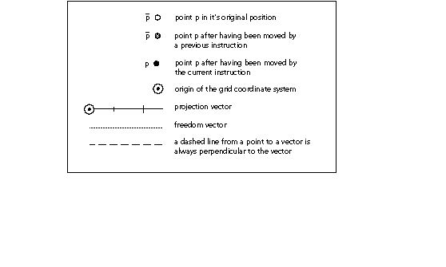
The Instructions
AA[] Adjust Angle
| Code Range | 0x7F |
| Pops p: | point number (uint32) |
| Pushes | - |
| Related instructions | SANGW[ ] |
Pops one argument from the stack. This instruction is anachronistic and has no other effect.
ABS[] ABSolute value
| Code Range | 0x64 |
| Pops | n: fixed point number (F26Dot6) |
| Pushes | |n|: absolute value of n (F26Dot6) |
| Replaces the number at the top of the stack with its absolute value. | |
Pops a 26.6 fixed point number, n, off the stack and pushes the absolute value of n onto the stack.
ADD[] ADD
| Code Range | 0x60 |
| Pops | n2: fixed point number (F26Dot6) n1: fixed point number (F26Dot6) |
| Pushes | sum: n1 + n2(F26Dot6) |
| Adds the top two numbers on the stack. | |
Pops two 26.6 fixed point numbers, n2 and n1, off the stack and pushes the sum of those two numbers onto the stack.
ALIGNPTS[] ALIGN Points
| Code Range | 0x27 |
| Pops | p2: point number (uint32) p1: point number (uint32) |
| Pushes | - |
| Uses | zp0 with point p2 and zp1 with point p1, freedom vector, projection vector |
| Related instructions | ALIGNRP[ ] |
Aligns the two points whose numbers are the top two items on the stack along an axis orthogonal to the projection vector.
Pops two point numbers, p2 and p1, from the stack and makes the distance between them zero by moving both points along the freedom vector to the average of their projections along the projection vector.
In the illustration below, points p1 and p2 are moved along the freedom vector until the projected distance between them is reduced to zero. The distance from A to B equals d/2 which equals the distance from B to C. The value d/2 is one-half the original projected distance between p1 and p2.
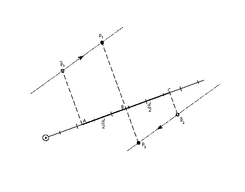
ALIGNRP[] ALIGN to Reference Point
| Code Range | 0x3C |
| Pops | p1, p2, , ploopvalue: point numbers (uint32) |
| Pushes | - |
| Uses | zp1 with point p and zp0 with rp0, loop, freedom vector, projection vector |
| Related instructions | ALIGNPTS[ ] |
Aligns the points whose numbers are at the top of the stack with the point referenced by rp0.
Pops point numbers, p1, p2, , ploopvalue, from the stack and aligns those points with the current position of rp0 by moving each point pi so that the projected distance from pi to rp0 is reduced to zero. The number of points aligned depends up the current setting the state variable loop.
In the illustration below, point p is moved along the freedom vector until its projected distance from rp0 is reduced to zero.
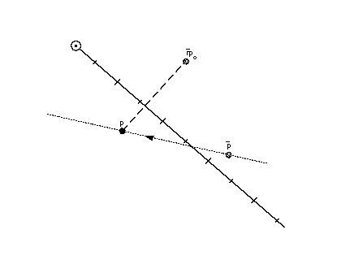
AND[] logical AND
| Code Range | 0x5A |
| Pops | e2: stack element (StkElt) e1: stack element (StkElt) |
| Pushes | (e1 and e2): logical and of e1 and e2 (uint32) |
| Related instructions | OR[ ] |
Takes the logical and of the top two stack elements.
Pops the top two elements, e2 and e1, from the stack and pushes the result of a logical and of the two elements onto the stack. Zero is pushed if either or both of the elements are FALSE (have the value zero). One is pushed if both elements are TRUE (have a non-zero value).
CALL[] CALL function
| Code Range | 0x2B |
| Pops | f: function identifier number (int32 in the range 0 through (n-1) where n is specified in the 'maxp' table) |
| Pushes | - |
| Related instructions | FDEF[ ], EIF[ ] |
Calls the function identified by the number of the top of the stack.
Pops a function identifier number, f, from the stack and calls the function identified by f. The instructions contained in the function body will be executed. When execution of the function is complete, the instruction pointer will move to the next location in the instruction stream where execution of instructions will resume.
CEILING[] CEILING
| Code Range | 0x67 |
| Pops | n: fixed point number (F26Dot6) |
| Pushes | n : ceiling of n (F26Dot6) |
| Related instructions | FLOOR[ ] |
Takes the ceiling of the number at the top of the stack.
Pops a number n from the stack and pushes n , the least integer value greater than or equal to n. Note that the ceiling of n, though an integer value, is expressed as 26.6 fixed point number.
CINDEX[] Copy the INDEXed element to the top of the stack
| Code Range | 0x25 |
| Pops | k: stack element number (int32) |
| Pushes | ek: kth stack element (StkElt) |
| Stack before | k: stack element number |
| e1: stack element | |
| ... | |
| ek: stack element | |
| Stack after | ek: indexed element |
| e1: stack element | |
| ... | |
| ek: stack element | |
| Related instructions | MINDEX[ ] |
Copies the indexed stack element to the top of the stack.
Pops a stack element number, k, from the stack and pushes a copy of the kth stack element on the top of the stack. Since it is a copy that is pushed, the kth element remains in its original position. This feature is the key difference between the CINDEX[ ] and MINDEX[ ] instructions.
A zero or negative value for k is an error.
CLEAR[] CLEAR the stack
| Code Range | 0x22 |
| Pops | all the items on the stack (StkElt) |
| Pushes | - |
Clears all elements from the stack.
DEBUG[] DEBUG call
| Code Range | 0x4F |
| Pops | n: integer (uint32) |
| Pushes | - |
Pops an integer from the stack. In non-debugging versions of the interpreter, the execution of instructions will continue. In debugging versions, available to font developers, an implementation dependent debugger will be invoked.
This instruction is only for debugging purposes and should not be a part of a finished font. Some implementations do not support this instruction.
DELTAC1[] DELTA exception C1
| Code Range | 0x73 |
| Pops | n: number of pairs of exception specifications and CVT entry numbers (uint32) |
| argn, cn, argn-1,cn-1, , arg1, c1: pairs of CVT entry number and exception specifications (pairs of uint32s) | |
| Pushes | - |
| Uses | delta shift, delta base |
| Related instructions | DELTAC2[ ], DELTAC3, DELTAP1, DELTAP2, DELTAP3 |
Creates an exception to one or more CVT values, each at a specified point size and by a specified amount.
Pops an integer, n, followed by n pairs of exception specifications and control value table entry numbers. DELTAC1[] changes the value in each CVT entry specified at the size and by the pixel amount specified in its paired argument.
The 8 bit arg component of the DELTAC1[] instruction decomposes into two parts. The most significant 4 bits represent the relative number of pixels per em at which the exception is applied. The least significant 4 bits represent the magnitude of the change to be made.
The relative number of pixels per em is a function of the value specified in the argument and the delta base. The DELTAC1[] instruction works at pixel per em sizes beginning with the delta base through the delta_base + 15. To invoke an exception at a larger pixel per em size, use the DELTAC2[] or DELTAC3[] instruction which can affect changes at sizes up to delta_base + 47 or, if necessary, increase the value of the delta base.
The magnitude of the move is specified, in a coded form, in the instruction. Table 5 lists the mapping from exception values and the magnitude of the move made.The size of the step depends on the value of the delta shift.
Table 4: Magnitude values mapped to number of steps to move
| Selector | 0 | 1 | 2 | 3 | 4 | 5 | 6 | 7 | 8 | 9 | 10 | 11 | 12 | 13 | 14 | 15 |
|---|---|---|---|---|---|---|---|---|---|---|---|---|---|---|---|---|
| Number of steps | -8 | -7 | -6 | -5 | -4 | -3 | -2 | -1 | 1 | 2 | 3 | 4 | 5 | 6 | 7 | 8 |
For additional information on the DELTA instructions see Instructing Fonts .
DELTAC2[] DELTA exception C2
| Code Range | 0x74 |
| Pops | n: number of pairs of exception specifications and CVT entry numbers (uint32) |
| argn, cn, argn-1,cn-1, , arg1, c1: pairs of CVT entry number and exception specifications (pairs of uint32s) | |
| Pushes | - |
| Uses | delta shift, delta base |
| Related instructions | DELTAC2[ ], DELTAC3[], DELTAP1[], DELTAP2[], DELTAP3[] |
Creates an exception to one or more CVT values, each at a specified point size and by a specified amount.
Pops an integer, n, followed by n pairs of exception specifications and CVT entry numbers. DELTAC2[] changes the value in each CVT entry specified at the size and by the amount specified in its paired argument.
The DELTAC2[] instruction is exactly the same as the DELTAC1[] instruction except for operating at pixel per em sizes beginning with the (delta_base + 16) through the (delta_base + 31). To invoke an exception at a smaller pixel per em size, use the DELTAC1[] instruction. To invoke an exception at a smaller pixel per em size, use the DELTAC3[] instruction which can affect changes at sizes up to delta_base + 47 or, if necessary, change the value of the delta base.
For more information see the entry for DELTAC1[] or Instructing Fonts .
DELTAC3[] DELTA exception C3
| Code Range | 0x75 |
| Pops | n: number of pairs of CVT entry numbers and exception specifications (uint32) |
| argn, cn, argn-1,cn-1, , arg1, c1: pairs of CVT entry number and exception specifications (pairs of uint32s) | |
| Pushes | - |
| Uses | delta shift, delta base |
| Related instructions | DELTAC2[ ], DELTAC3[], DELTAP[], DELTAP2[], DELTAP3[] |
Creates an exception to one or more CVT values, each at a specified point size and by a specified amount.
Pops an integer, n, followed by n pairs of exception specifications and CVT entry numbers. DELTAC3[] changes the value in each CVT entry specified at the size and by the amount specified in its paired argument.
The DELTAC3[] instruction is exactly the same as the DELTAC1 instruction except for operating at pixel per em sizes beginning with the (delta_base + 32) through the (delta_base + 47).
For more information see the entry for DELTAC1[] or Instructing Fonts .
DELTAP1[] DELTA exception P1
| Code Range 0x5D | |
| Pops n: number of pairs of exception specifications and points (uint32) | |
| argn, pn, argn-1, pn-1, , arg1, p1: n pairs of exception specifications and points (pairs of uint32s) | |
| Pushes | - |
| Uses | zp0, delta base, delta shift, freedom vector, projection vector |
| Related instructions | DELTAC2[ ], DELTAC3, DELTAP1, DELTAP2, DELTAP3 |
Creates an exception at one or more point locations, each at a specified point size and by a specified amount.
DELTAP1[] works on the points in the zone reference by zp0. It moves the specified points at the size and by the amount specified in the paired argument. Moving a point makes it possible to turn on or off selected pixels in the bitmap that will be created when the affected outline is scan converted. An arbitrary number of points and arguments can be specified.
The grouping [argi, pi] can be executed n times. The value of argi consists of a byte with lower four bits of which represent the magnitude of the exception and the upper four bits, the relative pixel per em value.
The actual pixel per em size at which a DELTAP instruction works is a function of the relative pixel per em size and the delta base. The DELTAP1[] instruction works at pixel per em sizes beginning with the delta base through the delta_base + 15. To invoke an exception at a larger pixel per em size, use the DELTAP2[] or DELTAP3[] instruction which together can affect changes at sizes up to delta_base + 47 or, if necessary, increase the value of the delta base.
The magnitude of the move is specified, in a coded form, in the instruction. Table 5 lists the mapping from exception values used in a DELTA instruction to the magnitude in steps of the move made. The size of the step depends on the value of the delta shift.
Table 5: Magnitude values mapped to number of steps to move
| Selector | 0 | 1 | 2 | 3 | 4 | 5 | 6 | 7 | 8 | 9 | 10 | 11 | 12 | 13 | 14 | 15 |
|---|---|---|---|---|---|---|---|---|---|---|---|---|---|---|---|---|
| Number of steps | -8 | -7 | -6 | -5 | -4 | -3 | -2 | -1 | 1 | 2 | 3 | 4 | 5 | 6 | 7 | 8 |
DELTAP2[] DELTA exception P2
| Code Range | 0x71 |
| Pops | n: number of pairs of exception specifications and points (uint32) |
| argn, pn, argn-1, pn-1, , arg1, p1: n pairs of exception specifications and points (pairs of uint32s) | |
| Pushes | - |
| Uses | zp0, delta shift, delta base, freedom vector, projection vector |
| Related instructions | DELTAC2[ ], DELTAC3, DELTAP1, DELTAP2, DELTAP3 |
Creates an exception at one or more point locations, each at a specified point size and by a specified amount.
DELTAP2[] works on the points in the zone reference by zp0. It moves the specified points at the size and by the amount specified in the paired argument. Moving a point makes it possible to turn on or off selected pixels in the bitmap that will be created when the affected outline is scan converted. An arbitrary number of points and arguments can be specified.
The DELTAP2[] instruction is identical to the DELTAP1[] instruction save for operating at pixel per em sizes beginning with the (delta_base + 16) through the (delta_base + 31). To invoke an exception at a smaller pixel per em size, use the DELTAP1[] instruction. To invoke an exception at a smaller pixel per em size, use the DELTAP3[] instruction. If necessary, change the value of the delta_base.
DELTAP3[] DELTA exception P3
| Code Range | 0x72 |
| Pops | n: number of pairs of exception specifications and points (uint32) |
| argn, pn, argn-1, pn-1, , arg1, p1: n pairs of exception specifications and points (pairs of uint32s) | |
| Pushes | - |
| Uses | zp0, delta base, delta shift, freedom vector, projection vector |
| Related instructions | DELTAC2[ ], DELTAC3, DELTAP1, DELTAP2, DELTAP3 |
Creates an exception at one or more point locations, each at a specified point size and by a specified amount.
Pops an integer, n, followed by n pairs of exception specifications and points. DELTAP3[] works on the points in the zone reference by zp0. It moves the specified points at the size and by the amount specified in the paired argument. Moving a point makes it possible to turn on or off selected pixels in the bitmap that will be created when the affected outline is scan converted. An arbitrary number of points and arguments can be specified.
The DELTAP3[] instruction is identical to the DELTAP1[] instruction save for operating at pixel per em sizes beginning with the (delta_base + 32) through the (delta base + 47). To invoke an exception at a smaller pixel per em size, use the DELTAP1[] or the DELTAP2[] instruction. If necessary, change the value of the delta base.
DEPTH[] DEPTH of the stack
| Code Range | 0x24 |
| Pops | - |
| Pushes | n: number of elements (int32) |
Pushes n, the number of elements currently in the stack, onto the stack.
DIV[] DIVide
| Code Range | 0x62 |
| Pops | n2: divisor (F26Dot6) |
| n1: dividend (F26Dot6) | |
| Pushes | (n1 * 64)/n2: quotient (F26Dot6) |
Divides the number second from the top of the stack by the number at the top of the stack.
Pops two 26.6 fixed point numbers, n1 and n2 off the stack and pushes onto the stack the quotient obtained by dividing n2 by n1. The division takes place in the following fashion, n1 is shifted left by six bits and then divided by 2.
DUP[] DUPlicate top stack element
| Code Range | 0x20 |
| Pops | e: stack element (StkElt) |
| Pushes | e: stack element (StkElt) |
| e: stack element (StkElt) |
Duplicates the top element on the stack.
Pops an element, e, from the stack, duplicates that element and pushes it twice.
EIF[] End IF
| Code Range | 0x59 |
| Pops | - |
| Pushes | - |
| Related instructions | IF[ ], ELSE[ ] |
Marks the end of an IF or IF-ELSE instruction sequence.
ELSE[] ELSE clause
| Code Range | 0x1B |
| Pops | - |
| Pushes | - |
| Related instructions | IF[ ], EIF[ ] |
Marks the start of the sequence of instructions that are to be executed when an IF instruction encounters a FALSE value on the stack. This sequence of instructions is terminated with an EIF instruction.
The ELSE portion of an IF-ELSE-EIF sequence is optional.
ENDF[] END Function definition
| Code Range | 0x2D |
| Pops | - |
| Pushes | - |
| Related instructions | FDEF[ ], IDEF[ ] |
Marks the end of a function definition or an instruction definition. Function definitions and instruction definitions cannot be nested.
EQ[] EQual
| Code Range | 0x54 |
| Pops | e2: stack element e1: stack element |
| Pushes | b: Boolean value (uint32 in the range [0,1]) |
| Related instructions | NEQ[ ] |
Tests whether the top two numbers on the stack are equal in value.
Pops two 32 bit values, e2 and e1, from the stack and compares them. If they are the same, one, signifying TRUE is pushed onto the stack. If they are not equal, zero, signifying FALSE is placed onto the stack.
EVEN[] EVEN
| Code Range | 0x57 |
| Pops | e: stack element (F26Dot6) |
| Pushes | b: Boolean value (uint32 in the range [0,1]) |
| Uses | round state |
| Related instructions | ODD[ ] |
Tests whether the number at the top of the stack, when rounded according to the round state, is even.
Pops a 26.6 number, e, from the stack and rounds that number according to the current round state. The number is then truncated to an integer. If the truncated number is even, one, signifying TRUE, is pushed onto the stack; if it is odd, zero, signifying FALSE, is placed onto the stack.
FDEF[] Function DEFinition
| Code Range | 0x2C |
| Pops | f: function identifier number (integer in the range 0 through (n-1) where n is specified in the 'maxp' table |
| Pushes | - |
| Related instructions | ENDF[ ], CALL[ ] |
Marks the start of a function definition and pops a number, f, from the stack to uniquely identify this function. That definition will terminate when an ENDF[] is encountered in the instruction stream. A function definition can appear only in the font program or the CVT program. Functions must be defined before they can be used with a CALL[ ] instruction.
FLIPOFF[] set the auto FLIP Boolean to OFF
| Code Range | 0x4E |
| Pops | - |
| Pushes | - |
| Sets | auto flip |
| Affects | MIRP, MIAP |
| Related instructions | FLIPON[ ], MIRP[ ], MIAP[ ] |
Sets the auto flip Boolean in the graphics state to FALSE causing the MIRP[] and MIAP[] instructions to use the sign of control value table entries. When auto flip is set to FALSE, the direction in which distances are measured becomes significant. The default value for the auto flip state variable is TRUE.
FLIPON[] set the auto FLIP Boolean to ON
| Code Range | 0x4D |
| Pops | - |
| Pushes | - |
| Sets | auto flip |
| Affects | MIRP, MIAP |
| Related instructions | FLIPOFF[ ], MIRP[ ], MIAP[ ] |
Sets the auto flip Boolean in the graphics state to TRUE causing the MIRP[] and MIAP[] instructions to ignore the sign of control value table entries. When the auto flip variable is TRUE, the direction in which distances are measured becomes insignificant. The default value for the auto flip state variable is TRUE.
FLIPPT[] FLIP PoinT
| Code Range | 0x80 |
| Pops | p1, p2, , ploopvalue: point number (uint32) |
| Pushes | - |
| Uses | zp0, loop |
| Related instructions | FLIPRGON[ ], FLIPRGOFF[ ] |
Makes an on-curve point an off-curve point or an off-curve point an on-curve point.
Pops points, p, p1, p2, , ploopvalue from the stack. If pi is an on-curve point it is made an off-curve point. If pi is an off-curve point it is made an on-curve point. None of the points pi is marked as touched. As a result, none of the flipped points will be affected by an IUP[ ] instruction. A FLIPPT[ ] instruction redefines the shape of a glyph outline.
FLIPRGOFF[] FLIP RanGe OFF
| Code Range | 0x82 |
| Pops | h: high point number in range (uint32) |
| l: low point number in range (uint32) | |
| Pushes | - |
| Uses | zp0 |
| Related instructions | FLIPPT[ ], FLIPRGOFF[ ] |
Changes all of the points in the range specified to off-curve points.
Pops two numbers defining a range of points, the first a highpoint and the second a lowpoint. On-curve points in this range will become off-curve points. The position of the points is not affected and accordingly the points are not marked as touched.
FLIPRGON[] FLIP RanGe ON
| Code Range | 0x81 |
| Pops | h: highest point number in range of points to be flipped (uint32) |
| l: lowest point number in range of points to be flipped (uint32) | |
| Pushes | - |
| Uses | zp0 |
| Related instructions | FLIPPT[ ], FLIPRGOFF[ ] |
Makes all the points in a specified range into on-curve points.
Pops two numbers defining a range of points, the first a highpoint and the second a lowpoint. Off-curve points in this range will become on-curve points. The position of the points is not affected and accordingly the points are not marked as touched.
FLOOR[] FLOOR
| Code Range | 0x66 |
| Pops | n: number whose floor is desired (F26Dot6) |
| Pushes | n : floor of n (F26Dot6) |
| Related instructions | CEILING[ ] |
Takes the floor of the value at the top of the stack.
Pops a 26.6 fixed point number n from the stack and returns n , the greatest integer value less than or equal to n. Note that the floor of n, though an integer value, is expressed as 26.6 fixed point number.
GC[a] Get Coordinate projected onto the projection vector
| Code Range | 0x46 - 0x47 |
| a | 0: use current position of point p |
| 1: use the position of point p in the original outline | |
| Pops | p: point number (uint32) |
| Pushes | c: coordinate location (F26Dot6) |
| Uses | zp2, projection vector, dual projection vector |
| Related instructions | SCFS[ ] |
Gets the coordinate value of the specified point using the current projection vector.
Pops a point number p and pushes the coordinate value of that point on the current projection vector onto the stack. The value returned by GC[] is dependent upon the current direction of the projection vector.
The illustration below, GC[1], with p1 at the top of the stack, returns the original position of point p1 while GC[0], with p2 at the top of the stack, returns the current position of point p2.
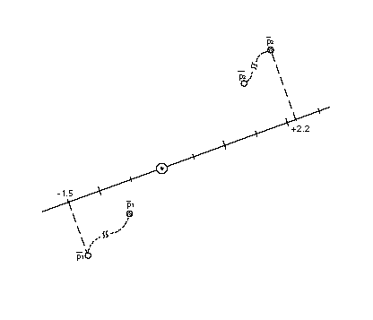
GETINFO[] GET INFOrmation
| Code Range | 0x88 |
| Pops | selector: integer (uint32) |
| Pushes | result: integer (uint32) |
Used to obtain data about the version of the TrueType engine that is rendering the font as well as the characteristics of the current glyph. The instruction pops a selector used to determine the type of information desired and pushes a result onto the stack.
Setting bit 0 in the selector requests the engine version. Setting bit 1 asks whether the glyph has been rotated. Setting bit 2 asks whether the glyph has been stretched. To request information on two or more of these values, set the appropriate bits. For example, a selector value of 6 (0112) requests information on both rotation and stretching.
The result is pushed onto the stack with the requested information. Bits 0 through 7 of result comprise the font engine version number. The version numbers are listed in TABLE 0-2.
Bit 8 is set to 1 if the current glyph has been rotated. It is 0 otherwise. Bit 9 is set to 1 to indicate that the glyph has been stretched. It is 0 otherwise.
TABLE 0-1 Selector bits and the results produced
| selector bits | meaning | result bits |
|---|---|---|
| 0 | get engine version | 0-7 |
| 1 | rotated? | 8 |
| 2 | stretched? | 9 |
The possible values for the engine version are given in TABLE 0-2.
TABLE 0-2 Font engine version number
| System | Engine Version |
|---|---|
| Macintosh System 6.0 | 1 |
| Macintosh System 7.0 | 2 |
| Windows 3.1 | 3 |
| KanjiTalk 6.1 | 4 |
If the TrueType engine is the System 7.0 version and the selector requested information on the version number, rotation and stretching and the glyph is rotated but not stretched, the result will be 01 0000 00102 or 258.
GFV[] Get Freedom Vector
| Code Range | 0x0D |
| Pops | - |
| Pushes | px: x component (EF2Dot14) |
| py: y component (EF2Dot14) | |
| Gets | freedom vector |
| Related instructions | GPV[ ] |
Decomposes the current freedom vector into its x and y components and puts those components on the stack as two 2.14 numbers. The numbers occupy the least significant two bytes of each long.
The first component pushed, px, is the x-component of the freedom vector. The second pushed, py, is the y-component of the freedom vector. Each is a 2.14 number.
GFV[] treats the freedom vector as a unit vector originating at the grid origin. In the illustration below, the distance from point A to point B is 1 unit.
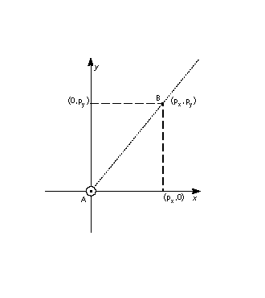
GPV[] Get Projection Vector
| Code Range | 0x0C |
| Pops | - |
| Pushes | px: x component (EF2Dot14) |
| py: y component (EF2Dot14) | |
| Gets | projection vector |
| Related instructions | GFV[ ] |
Decomposes the current projection vector into its x and y components and pushes those components onto the stack as two 2.14 numbers.
The first component pushed, px, is the x-component of the projection vector. The second pushed, py, is the y-component of the projection vector.
GPV[] treats the projection vector as a unit vector originating at the grid origin. In the illustration below, the distance from point A to point B is one unit.
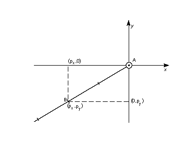
GT[] Greater Than
| Code Range | 0x52 |
| Pops | e2: stack element e1: stack element |
| Pushes | b: Boolean value (uint32 in the range [0,1]) |
| Related instructions | LT[ ], GTEQ[ ] |
Compares the size of the top two stack elements.
Pops two integers, e2 and e1, from the stack and compares them. If e1 is greater than e2, one, signifying TRUE, is pushed onto the stack. If e1 is not greater than e1, zero, signifying FALSE, is placed onto the stack.
GTEQ[] Greater Than or EQual
| Code Range | 0x53 |
| Pops | e2: stack element e1: stack element |
| Pushes | b: Boolean value (uint32 in the range [0,1]) |
| Related instructions | LTEQ[ ], GT[ ] |
Compares the size of the top two stack elements.
Pops two integers, e2 and e1, from the stack and compares them. If e1 is greater than or equal to e2, one, signifying TRUE, is pushed onto the stack. If e1 is not greater than or equal to e1, zero, signifying FALSE, is placed onto the stack.
IDEF[] Instruction DEFinition
| Code Range | 0x89 |
| Pops | opcode (Eint8) |
| Pushes | - |
| Related instructions | ENDF[ ] |
Begins the definition of an instruction. The instruction is identified by the opcode popped. The intent of the IDEF[ ] instruction is to allow old versions of the scaler to work with fonts that use instructions defined in later releases of the TrueType interpreter. Referencing an undefined opcode will have no effect. The IDEF[ ] is not intended for creating user defined instructions. The FDEF[ ] should be used for that purpose.
The instruction definition that began with the IDEF[ ] terminates when an ENDF[ ] is encountered in the instruction stream. Nested IDEFs are not allowed. Subsequent executions of the opcode popped will be directed to the contents of this instruction definition. IDEFs should be defined in the font program. Defining instructions in the CVT program is not recommended.
IF[] IF test
| Code Range | 0x58 |
| Pops | e: stack element |
| Pushes | - |
| Related instructions | ELSE[ ], EIF[ ] |
Marks the beginning of an if-statement.
Pops an integer, e, from the stack. If e is zero (FALSE), the instruction pointer is moved to the associated ELSE or EIF[] instruction in the instruction stream. If e is nonzero (TRUE), the next instruction in the instruction stream is executed. Execution continues until the associated ELSE[] instruction is encountered or the associated EIF[] instruction ends the IF[] statement. If an associated ELSE[] statement is found before the EIF[], the instruction pointer is moved to the EIF[] statement.
INSTCTRL[ ] INSTRuction execution ConTRoL
| Code Range | 0x8E |
| Pops | s: selector (int32) v: value for instruction control (int32) |
| Pushes | - |
| Sets | instruction control |
Sets the instruction control state variable making it possible to turn on or off the execution of instructions and to regulate use of parameters set in the CVT program.
This instruction clears and sets various control flags. The selector is used to choose the relevant flag. The value determines the new setting of that flag.
In the version 1.0 there are only two flags in use.
Flag 1 is used to inhibit grid-fitting. It is chosen with a selector value of 1. If this flag is set to TRUE (v=1), any instructions associated with glyphs will not be executed. If the flag is FALSE (v=0), instructions will be executed. For example, to inhibit grid-fitting when a glyph is being rotated or stretched, use the following sequence on the preprogram:
| PUSHB[000] 6 | /* ask GETINFO to check for stretching or rotation */ |
| GETINFO[ ] | /* will push TRUE if glyph is stretched or rotated */ |
| IF[] | /* tests value at top of stack */ |
| PUSHB[000] 1 | /* value for INSTCTRL */ |
| PUSHB[000] 1 | /* selector for INSTCTRL */ |
| INSTCTRL[] | /* based on selector and value will turn grid-fitting off */ |
| EIF[] | |
Flag 2 is used to establish that any parameters set in the CVT program should be ignored when instructions associated with glyphs are executed. These include, for example, the values for scantype and the CVT cut-in. When flag2 is set to TRUE the default values of those parameters will be used regardless of any changes that may have been made in those values by the preprogram. When flag2 is set to FALSE, parameter values changed by the CVT program will be used in glyph instructions.
INSTCTRL[] can only be executed in the CVT program.
IP[] Interpolate Point
| Code Range | 0x39 |
| Pops | p1, p2, , ploopvalue: point number (uint32) |
| Pushes | - |
| Uses | zp0 with rp1, zp1 with rp2, zp2 with point p, loop, freedom vector, projection vector, dual projection vector |
| Related instructions | IUP[ ] |
Interpolates the position of the specified points to preserve their original relationship with the reference points rp1 and rp2.
Pops point numbers, p1, p2, , ploopvalue, from the stack. Moves each point pi so that its relationship to rp1 and rp2 is the same as it was in the original uninstructed outline. That is, the following relationship holds:
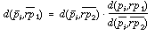
This instruction is illegal if rp1 and rp2 occupy the same position on the projection vector.
More intuitively, an IP[] instruction preserves the relative relationship of a point relative to two reference points.
In the illustrations below, point p is interpolated relative to reference points rp1 and rp2. In the first illustration, which depicts the situation before the IP[] instruction is executed, the distance from of point p to the original position of rp1 is d1 and the distance from point p to the original position of point rp2 is d2. The ratio of the two distances is d1:d2.
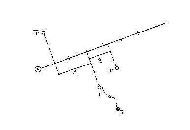
The effect of the IP[] instruction is shown in the illustration below. It moves point p along the freedom vector until the ratio of the distance, d3, from the current position of rp1 to point p, to the distance, d4, from point p to the current position of point rp2 is equal to d1:d2. That is, point p is moved along the freedom vector until d1:d2 = d3:d4.when these distances are measured along the projection vector.
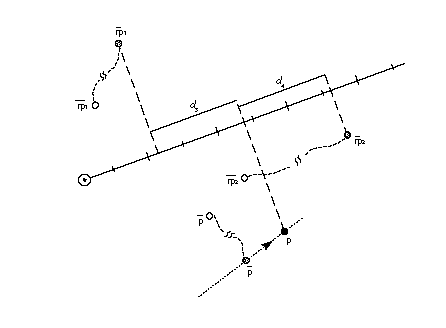
ISECT[] moves point p to the InterSECTion of two lines
| Code Range | 0x0F |
| Pops | a0: start point of line A (uint32) |
| a1: end point of line A (uint32) | |
| b0: start point of line B (uint32) | |
| b1: end point of line B (uint32) | |
| p: point to move (uint32) Pushes - | |
| Uses | zp2 with point p, zp0 with line A, zp1 with line B |
Moves the specified point to the intersection of the two lines specified.
Pops the end points of line A, a0 and a1, followed by the end points of line B, b0 and b1 followed by point p. Puts point p at the intersection of the lines A and B. The points a0 and a1 define line A. Similarly, b0 and b1 define line B. ISECT ignores the freedom vector in moving point p.
In the degenerate case of parallel lines A and B, the point is put in the middle. That is.
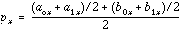
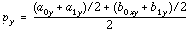
In the illustration below, point p is moved from its current position to the intersection of the line defined by a0, a1 and the line defined by b0, b1. Note that point p need not move along the freedom vector but is simply relocated at the point of intersection.
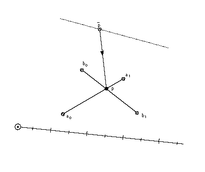
IUP[a] Interpolate Untouched Points through the outline
| Code Range | 0x30 - 0x31 |
| a | 0: interpolate in the y-direction |
| 1: interpolate in the x-direction | |
| Pops | - |
| Pushes | - |
| Uses | zp2 |
| Related instructions | IP[ ] |
Interpolates untouched points in the zone referenced by zp2 to preserve the original relationship of the untouched points to the other points in that zone.
Considers the reference glyph outline contour by contour, moving any untouched points that fall sequentially between a pair of touched points. How such a point is moved, however, depends on whether its projection fall between the projections of the touched points. That is, if the projected x-coordinate or y-coordinate (depending on whether the interpolation is in x or in y) of an untouched point were originally between those of the touched pair, that coordiante is linearly interpolated between the new coordinates of the touched points. Otherwise the untouched point is shifted by the amount the nearest touched point was shifted from its original outline position. The value of the Boolean a, determines whether the interpolation will be in the x-direction or the y-direction. The current settings of the freedom and projection vectors are not relevant.
The set of fiigures below illustrates this distinction. The first illustration shows the contour before the IUP[] instruction is executed. Here p1, p2, p3, p4 and p5 are consecutive points on a contour. Point p2, p3 and p4 all fall sequentially between p1 and p5 on the contour. Assume that point p3 has been touched.
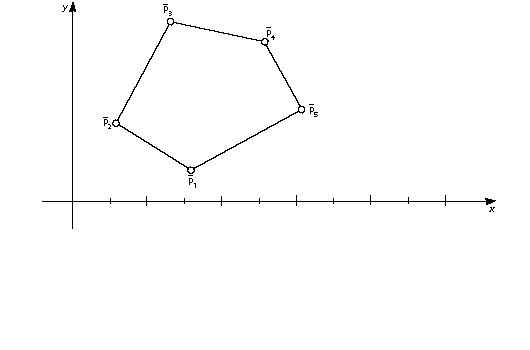
Point p4 has an x-coordinate that is between p1 and p5 while points p2 and p3 do not. Assume that p1 and p5 have been moved by a previous instructions and that point p3 has been touched but not moved from its original position. As a result of an IUP[1] an interpolation in the x--direction takes place. Point p4 will be linearly interpolated. Point p2 will be shifted by the amount the nearest touched point was shifted. Point p3 will be unaffected. (Points p2 and p4 are assumed to be in their original position. This is not strictly necessary as a point that has been moved can be untouched with the UTP[ ] instruction and hence subject to the actions of an IUP[ ] instruction.)
As the result of the IUP[1] instruction, two points are moved. The first move is the shift illustrated below. Point p1 has moved a distance ds units parallel to the x-axis from its original position. Point p2 is moved parallel to the x-axis until it is at a distance equal to ds from its original position.
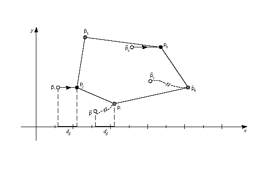
The second move is the linear interpolation shown in the illustration below. Point p4 is moved along the specified axis to a new position that preserves its relative distance from points p1 and p5. After the interpolation the ratio of the original distance from point p4 to p1 (d1) to the original distance of point p4 to p5 (d2) is the same as the ratio of the new distance from point p4 to p1(d3) to the new distance of point p4 to p4 (d4). That is: d1:d2 = d3:d4
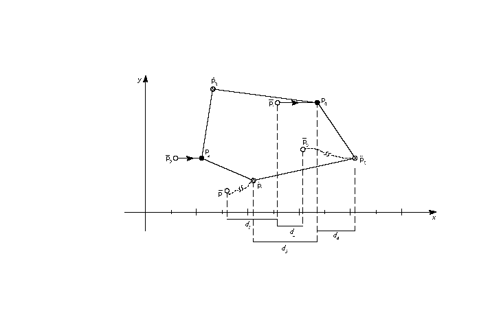
This instruction operates on points in the glyph zone pointed to by zp2. This zone should always be zone 1. Applying IUP[ ] to zone 0 is illegal.
The IUP[ ] instruction does not touch the points it moves. Thus the untouched points affected by an IUP[ ] instruction will be affected by subsequent IUP[] instructions unless they are touched by an intervening instruction.
JMPR[] JuMP Relative
| Code Range | 0x1C |
| Pops | offset: number of bytes to move instruction pointer (int32) |
| Pushes | - |
| Related instructions | JROF[ ], JROT[ ] |
Moves the instruction pointer to a new location specified by the offset popped from the stack.
Pops an integer offset from the stack. The signed offset is added to the instruction pointer and execution is resumed at the new location in the instruction steam. The jump is relative to the position of the instruction itself. That is, an offset of +1 causes the instruction immediately following the JMPR[] instruction to be executed.
JROF[] Jump Relative On False
| Code Range | 0x79 |
| Pops | e: stack element offset: number of bytes to move instruction pointer (int32) |
| Pushes | - |
| Related instructions | JMPR[ ] JROT[ ] |
Moves the instruction pointer to a new location specified by the offset popped from the stack if the element tested has a FALSE (zero) value.
Pops a Boolean value, e and an offset. In the case where the Boolean, e, is FALSE, the signed offset will be added to the instruction pointer and execution will be resumed at the new location; otherwise, the jump is not taken. The jump is relative to the position of the instruction itself.
JROT[] Jump Relative On True
| Code Range | 0x78 |
| Pops | e: stack element |
| offset: number of bytes to move | |
| instruction pointer (int32) | |
| Pushes | - |
| Related instructions | JMPR[ ] JROF[ ] |
Moves the instruction pointer to a new location specified by the offset value popped from the stack if the element tested has a TRUE value.
Pops a Boolean value, e and an offset. If the Boolean is TRUE (non-zero) the signed offset will be added to the instruction pointer and execution will be resumed at the address obtained. Otherwise, the jump is not taken. The jump is relative to the position of the instruction itself.
LOOPCALL[] LOOP and CALL function
| Code Range | 0x2A |
| Pops | f: function number integer in the range 0 through (n-1) where n is specified in the 'maxp' table count: number of times to call the function (signed word) |
| Pushes | - |
| Related instructions | SLOOP[ ] |
Repeatedly calls a function.
Pops a function number f and a count. Calls the function, f, count number of times.
LT[] Less Than
| Code Range | 0x50 |
| Pops | e2: stack element (StkElt) |
| e1: stack element (StkElt) | |
| Pushes | b: Boolean value (uint32 in the range [0,1]) |
| Related instructions | GT[ ], LTEQ[ ] |
Compares the two number at the top of the stack. The test succeeds if the second of the two numbers is smaller than the first.
Pops two integers from the stack, e2 and e1, and compares them. If e1 is less than e2, 1, signifying TRUE, is pushed onto the stack. If e1 is not less than e2, 0, signifying FALSE, is placed onto the stack.
LTEQ[] Less Than or EQual
| Code Range | 0x51 |
| Pops | e2: stack element |
| e1: stack element | |
| Pushes | b: Boolean value (uint32 in the range [0,1]) |
| Related instructions | GTEQ[ ], LT[ ] |
Compares the two numbers at the top of the stack. The test succeeds if the second of the two numbers is smaller than or equal to the first.
Pops two integers, e2 and e1 from the stack and compares them. If e1 is less than or equal to e2, one, signifying TRUE, is pushed onto the stack. If e1 is greater than e2, zero, signifying FALSE, is placed onto the stack.
MAX[] MAXimum of top two stack elements
| Code Range | 0x8B |
| Pops | e2: stack element |
| e1: stack element | |
| Pushes | maximum of e1 and e2 |
| Related instructions | MIN[ ] |
Returns the larger of the top two stack elements.
Pops two elements, e2 and e1, from the stack and pushes the larger of these two quantities onto the stack.
MD[a] Measure Distance
| Code Range | 0x49 - 0x4A |
| a | 0: measure distance in grid-fitted outline |
| 1: measure distance in original outline | |
| Pops | p2: point number (uint32) p1: point number (uint32) |
| Pushes | d: distance (F26Dot6) |
Uses zp0 with point p1, zp1 with point p2, projection vector, dual projectionv ector
Measures the distance between the two points specified.
Pops two point numbers p2 and p1 and measures the distance between the two points specified. The distance, d, is pushed onto the stack as a pixel coordinate. The distance is signed. Reversing the order in which the points are listed will change the sign of the result.
Depending upon the setting of the Boolean variable a, distance will be measured in the original outline or the grid-fitted outline. MD[0] measures the distance in the original outline while MD[1] measures the distance in the grid-fitted outline. As always, distance is measured along the projection vector. Just as reversing the order in which the points are listed will change the sign of the distance, reversing the orientation of the projection vector will have the same effect.
In the example below, MD[1] will yield the original outline distance from point p1 to point p2. MD[0] will yield the distance from point p1 to point p2.
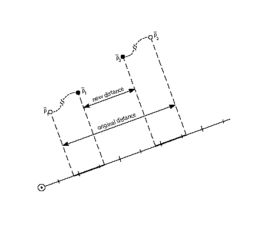
MDAP[a] Move Direct Absolute Point
| Code Range | 0x2E - 0x2F |
| a: | 0: do not round the value |
| 1: round the value | |
| Pops | p: point number (uint32) |
| Pushes | - |
| Sets | rp0 and rp1 are set to point p |
| Uses | zp0, freedom vector, projection vector, round state |
| Related instructions | MDRP[ ], MIAP[ ] |
Touch and, in some cases, round the specified point. A point that is "dapped" will be unaffected by subsequent IUP[ ] instructions and is generally intended to serve as a reference point for future instructions. Dapping a point with rounding set to grid will cause the point to have an integer valued coordinate along the projection vector. If the projection vector is set to the x-axis or y-axis, this will cause the point to be grid-aligned.
Pops a point number, p, and sets reference points rp0 and rp1 to point p. If the Boolean a is set to 1, the coordinate of point p, as measured against the projection vector, will be rounded and then moved the rounded distance from its current position. If the Boolean a is set to 0, point p is not moved, but nonetheless is marked as touched in the direction(s) specified by the current freedom vector.
MDRP[abcde] Move Direct Relative Point
| Code Range | 0xC0 - 0xDF |
| a | 0: do not reset rp0 to point p |
| 1: set rp0 to point p | |
| b | 0: do not keep distance greater than or equal to minimum distance |
| 1: keep distance greater than or equal to minimum distance |
|
| c | 0: do not round distance |
| 1: round the distance |
|
| de | distance type for engine characteristic compensation |
| Pops | p: point number (uint32) |
| Pushes | - |
| Sets | after point p is moved, rp1 is set equal to rp0, rp2 is set equal to point number p; if the a flag is set to TRUE, rp0 is set equal to point number p |
| Uses | zp0 with rp0 and zp1 with point p, minimum distance, round state,single width value, single width cut-in, freedom vector, projection vector, dual projection vector |
| Related instructions | MDAP[ ], MIRP[ ] |
Preserves the master outline distance between the specified point and the reference point rp0.
Pops a point number, p, and moves point p along the freedom vector so that the distance from its new position to the current position of rp0 is the same as the distance between the two points in the original uninstructed outline, and then adjusts it to be consistent with the Boolean settings. Note that it is only the original positions of rp0 and point p and the current position of rp0 that determine the new position of point p along the freedom vector.
MDRP[] is typically used to control the width or height of a glyph feature using a value which comes from the original outline. Since MDRP[] uses a direct measurement and does not reference the control value cut-in, it is used to control measurements that are unique to the glyph being instructed. Where there is a need to coordinate the control of a point with the treatment of points in other glyphs in the font, a MIRP[] instruction is needed.
Though MDRP[] does not refer to the CVT, its effect does depend upon the single-width cut-in value. If the device space distance between the measured value taken from the uninstructed outline and the single width value is less than the single width cut-in, the single width value will be used in preference to the outline distance. In other words, if the two distances are sufficiently close (differ by less than the single width cut-in), the single width value will be used.
The setting of the round state graphics state variable will determine whether and how the distance of point p from rp0 is rounded. If the round bit is not set, the value will be unrounded. If the round bit is set, the effect will depend upon the choice of rounding state.
A MDRP[] instruction can also be set to use the minimum distance value. Minimum distance sets a lower bound on the value the distance between two points can be rounded to.
Distances measured with the MDRP[] instruction, like all TrueType distances, must be either black, white or grey. Indicating this value in Booleans de allows the interpreter to compensate for engine characteristics as needed.
The illustration below, point p is moved along the freedom vector from its current position to a new position that is a distance, d from the reference point rp0. This distance is the same as the original distance from p to rp0.
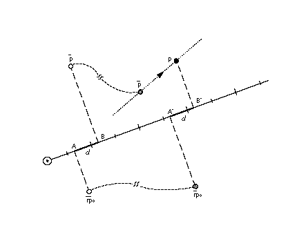
MIAP[a] Move Indirect Absolute Point
| Code Range | 0x3E - 0x3F |
| a | 0: don't round the distance and don't look at the control value cut-in |
| 1: round the distance and look at the control value cut-in | |
| Pops | n: CVT entry number (F26Dot6) |
| p: point number (uint32) | |
| Pushes | - |
| Sets | set rp0 and rp1 to point p |
| Uses | zp0, round state, control value cut-in, freedom vector, projection vector |
| Related instructions | MSIRP[ ], MIRP[ ], MDAP[ ] |
Makes it possible to coordinate the location of a point with that of other similar points by moving that point to a location specified in the control value table.
Pops a CVT entry number n and a point number p and then moves point p to the absolute coordinate position specified by the nth control value table entry. The coordinate is measured along the current projection vector. If boolean a has the value one, the position will be rounded as specified by round state. If boolean a has the value one and the device space difference between the CVT value and the original position is greater than the control value cut-in, the original position will be rounded (instead of the CVT value.)
The a Boolean above controls both rounding and the use of the control value cut-in. To have this Boolean specify only whether or not the MIAP[] instruction should look at the control value cut-in value, use the ROFF[] instruction to turn off rounding.
This instruction can be used to "create" twilight zone points. This is accomplished by setting zp0 to zone 0 and moving the specified point, which is initially at the origin to the desired location.
In the illustration below, point p is moved along the freedom vector until it occupies a position that projects to c units along the projection vector.
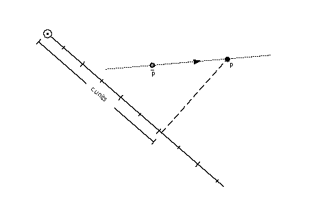
MIN[] MINimum of top two stack elements
| Code Range | 0x8C |
| Pops | e2: stack element e1: stack element |
| Pushes | minimum of e1 and e2 |
| Related instructions | MAX[ ] |
Returns the minimum of the top two stack elements.
Pops two elements, e2 and e1, from the stack and pushes the smaller of these two quantities onto the stack.
MINDEX[] Move the INDEXed element to the top of the stack
| Code Range | 0x26 |
| Pops | k: stack element |
| Pushes | ek: stack element |
| Stack before | k: stack element number (uint32) |
| e1: stack element | |
| ... | |
| ek-1: stack element | |
| ek: stack element | |
| Stack after | ek: indexed element |
| e1: stack element | |
| ... | |
| ek-1: stack element | |
| Related instructions | CINDEX[ ] |
Moves the indexed element to the top of the stack thereby removing it from its original position.
Pops an integer, k, from the stack and moves the element with index k to the top of the stack.
MIRP[abcde] Move Indirect Relative Point
| Code Range | 0xE0 - 0xFF |
| a | 0: Do not set rp0 to p |
| 1: Set rp0 to p | |
| b | 0: Do not keep distance greater than or equal to minimum distance |
| 1: Keep distance greater than or equal to minimum distance | |
| c | 0: Do not round the distance and do not look at the control value cut-in |
| 1: Round the distance and look at the control value cut-in value | |
| de: | distance type for engine characteristic compensation |
| Pops | n: CVT entry number (F26Dot6) p: point number (uint32) |
| Pushes | - |
| Uses | zp0 with rp0 and zp1 with point p. round state, control value cut-in, single width value, single width cut-in, freedom vector, projection vector, auto flip, dual projection vector |
| Sets | After it has moved the point this instruction sets rp1 equal to rp0, rp2 is set equal to point number p; lastly, if a has the value TRUE, rp0 is set to point number p. |
| Related instructions | MSIRP[ ], MIAP[ ], MDRP[ ] |
Makes it possible to coordinate the distance between a point and a reference point with other similar distances by making that distance subject to a control value table entry.
Moves point p along the freedom vector so that the distance from p to the current position of rp0 is equal to the distance stated in the referenced CVT entry, assuming that the cut-in test succeeds. Note that in making the cut-in test, MIRP[] uses the original outline distance between p and rp0. If the cut-in test fails, point p will be moved so that its distance from the current position of rp0 is equal to the original outline distance between p and the point referenced by rp0.
A MIRP[] instruction makes it possible to preserve the distance between two points subject to a number of qualifications. Depending upon the setting of Boolean flag b, the distance can be kept greater than or equal to the value established by the minimum distance state variable. Similarly, the instruction can be set to round the distance according to the round state graphics state variable. The value of the minimum distance variable is the smallest possible value the distance between two points can be rounded to. Additionally, if the c Boolean is set, the MIRP[] instruction acts subject to the control value cut-in. If the difference between the actual measurement and the value in the CVT is sufficiently small (less than the cut-in value), the CVT value will be used and not the actual value. If the device space difference between the CVT value and the single width value is smaller than the single width cut-in, then use the single width value rather than the control value table distance.
The c Boolean above controls both rounding and the use of control value table entries. If you would like the meaning of this Boolean to specify only whether or not the MIRP[] instruction should look at the control value cut-in, use the ROFF[] instruction to turn off rounding. In this manner, it is possible to specify that rounding is off but the cut-in still applies.
MIRP[] can be used to create points in the twilight zone.
In the illustration below, point p is moved along the freedom vector until its distance to point rp0 is equal to the distance d found in the reference CVT entry.
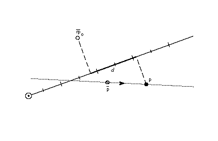
MPPEM[] Measure Pixels Per EM
| Code Range | 0x4B |
| Pops | - |
| Pushes | ppem: pixels per em (Euint16) |
| Uses | projection vector |
| Related instructions | MPS[ ] |
Pushes the current number of pixels per em onto the stack. Pixels per em is a function of the resolution of the rendering device and the current point size and the current transformation matrix. This instruction looks at the projection vector and returns the number of pixels per em in that direction. The number is always an integer.
The illustration below shows magnifications of an 18 point Times New Roman s at 72 dpi, 144 dpi, and 300 dpi, respectively. Increasing the number of pixels per em improves the quality of the image obtained. It does not, however, change the absolute size of the image obtained.
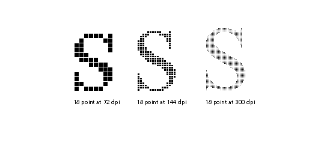
|
MPS[] Measure Point Size |
|
| Code Range | 0x4C |
| Pops | - |
| Pushes | pointSize: the current point size(Euint16) |
| Related instructions | MPPEM[ ] |
Pushes the current point size onto the stack.
Measure point size can be used to obtain a value which serves as the basis for choosing whether to branch to an alternative path through the instruction stream. It makes it possible to treat point sizes below or above a certain threshold differently.
The illustration below shows magnifications of 12 point, 24 point, and 48point Times New Roman Q at 72 dpi. Note that increasing the point size of a glyph increases its absolute size. On a low resolution device, like a screen, more detail can be captured at a higher point size.
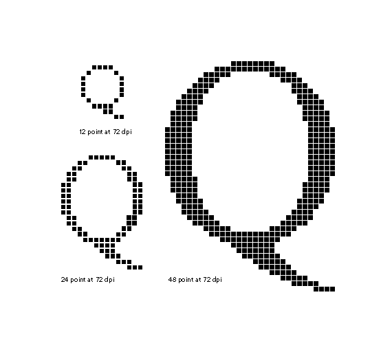
MSIRP[a] Move Stack Indirect Relative Point
| Code Range | 0x3A - 0x3B |
| a | 0: do not change rp0 |
| 1: set rp0 to point number p | |
| Pops | d: distance (F26Dot6) p: point number (uint32) |
| Pushes | - |
| Uses | zp1 with point p and zp0 with rp0, freedom vector, projection vector |
| Related instructions | MIRP[ ] |
Makes it possible to coordinate the distance between a point and a reference point by setting the distance from a value popped from the stack.
Pops a distance, d and a point number, p, and makes the distance between point p and the current position of rp0 equal to d. The distance, d, is in pixel coordinates.
MSIRP[ ] is very similar to the MIRP[ ] instruction except for taking the distance from the stack rather than the CVT. Since MSIRP[ ] does not use the CVT, the control value cut-in is not a factor as it is in MIRP[ ]. Since MSIRP[ ] does not round, its effect is not dependent upon the round state.
MSIRP[] can be used to create points in the twilight zone.
In the illustration below, point p is moved along the freedom vector until it is at a distance d from rp0.
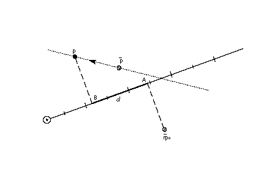
MUL[] MULtiply
| Code Range | 0x63 |
| Pops | n2: multiplier (F26Dot6) |
| n1: multiplicand (F26Dot6) | |
| Pushes | (n2 * n1)/64: product (F26Dot6) |
| Related instructions | DIV[ ] |
Multiplies the top two numbers on the stack. Pops two 26.6 numbers, n2 and n1, from the stack and pushes onto the stack the product of the two elements. The 52.12 result is shifted right by 6 bits and the high 26 bits are discarded yielding a 26.6 result.
NEG[] NEGate
| Code Range | 0x65 |
| Pops | n: pixel coordinate (F26Dot6) |
| Pushes | -n: negation of n1 (F26Dot6) |
Negates the number at the top of the stack.
Pops a number, n, from the stack and pushes the negated value of n onto the stack.
NEQ[] Not EQual
| Code Range | 0x55 |
| Pops | e2: stack element |
| e1: stack element | |
| Pushes | b: Boolean value (uint32 in the range [0,1]) |
| Related instructions | EQ[ ] |
Determines whether the two elements at the top of the stack are unequal.
Pops two numbers, e2 and e1, from the stack and compares them. If they are different, one, signifying TRUE is pushed onto the stack. If they are equal, zero, signifying FALSE is pushed onto the stack.
NOT[] logical NOT
| Code Range | 0x5C |
| Pops | e: stack element |
| Pushes | (not e): logical negation of e (uint32) |
Takes the logical negation of the number at the top of the stack.
Pops a number e from the stack and returns the result of a logical NOT operation performed on e. If e was zero, one is pushed onto the stack if e was nonzero, zero is pushed onto the stack.
NPUSHB[] PUSH N Bytes
| Code Range | 0x40 |
| From IS | n: number of bytes to push (1 byte interpreted as an integer) |
| b1, b2,...bn: sequence of n bytes | |
| Pushes | b1, b2,...bn: sequence of n bytes each extended to 32 bits (uint32) |
| Related instructions | NPUSHW[ ], PUSHB[ ], PUSHW[] |
Takes n bytes from the instruction stream and pushes them onto the stack.
Looks at the next byte in the instructions stream, n, and takes n unsigned bytes from the instruction stream, where n is an unsigned integer in the range (0 255), and pushes them onto the stack. The number of bytes to push, n, is not pushed onto the stack.
Each byte value is unsigned extended to 32 bits before being pushed onto the stack.
NPUSHW[] PUSH N Words
| Code Range | 0x41 |
| From IS | n: number of words to push (one byte interpreted as an integer) |
| w1, w2,...wn: sequence of n words formed from pairs of bytes, the high byte appearing first | |
| Pushes | w1, w2,...wn: sequence of n words each extended to 32 bits (int32) |
| Related instructions | NPUSHW[ ], PUSHB[ ] |
Takes n words from the instruction stream and pushes them onto the stack.
Looks at the next instruction stream byte n and takes n 16-bit signed words from the instruction stream, where n is an unsigned integer in the range (0 255), and pushes them onto the stack. Each word is sign extended to 32 bits before being placed on the stack.The value n is not pushed onto the stack.
NROUND[ab] No ROUNDing of value
| Code Range | 0x6C - 0x6F |
| ab | distance type for engine characteristic compensation |
| Pops | n1: pixel coordinate (F26Dot6) |
| Pushes | n2: pixel coordinate (F26Dot6) |
| Related instructions | ROUND[ ] |
Changes the values of the number at the top of the stack to compensate for the engine characteristics.
Pops a value, n1, from the stack and, possibly, increases or decreases its value to compensate for the engine characteristics established with the Boolean setting ab. The result, n2, is pushed onto the stack.
NROUND[ab] derives its name from it relationship to ROUND[ab]. It does the same operation as ROUND[ab] except that it does not round the result obtained after compensating for the engine characteristics.
ODD[] ODD
| Code Range | 0x56 |
| Pops | e1: stack element (F26Dot6) |
| Pushes | b: Boolean value |
| Uses | round state |
| Related instructions | EVEN[ ] |
Tests whether the number at the top of the stack is odd.
Pops a number, e1, from the stack and rounds it according to the current setting of the round state before testing it. The number is then truncated to an integer. If the truncated number is odd, one, signifying TRUE, is pushed onto the stack if it is even, zero, signifying FALSE is placed onto the stack.
OR[] logical OR
| Code Range | 0x5B |
| Pops | e2: stack element e1: stack element |
| Pushes | (e1 or e2): logical or of e1 and e2 (uint32) |
| Related instructions | AND[ ] |
Takes the logical or of the two numbers at the top of the stack.
Pops two numbers, e2 and e1 off the stack and pushes onto the stack the result of a logical or operation between the two elements. Zero is pushed if both of the elements are FALSE (have the value zero). One is pushed if either both of the elements are TRUE (has a nonzero value).
POP[] POP top stack element
| Code Range | 0x21 |
| Pops | e: stack element |
| Pushes | - |
Pops the top element from the stack.
PUSHB[abc] PUSH Bytes
| Code Range | 0xB0 - 0xB7 |
| abc | number of bytes to be pushed - 1 |
| From IS | b0, b1, bn: sequence of n + 1 bytes where n = 4a+2b+c = abc2 |
| Pushes | b0, b1, ,bn: sequence of n + 1 bytes each extended to 32 bits (uint32) |
| Related instructions | NPUSHB[ ], PUSHW[ ], NPUSHB[] |
Takes the specified number of bytes from the instruction stream and pushes them onto the interpreter stack.
The variables a, b, and c are binary digits representing numbers from 000 to 111 (0-7 in binary). The value 1 is automatically added to the abc figure to obtain the actual number of bytes pushed.
When byte values are pushed onto the stack they are non-sign extended with zeroes to form 32 bit numbers.
PUSHW[abc] PUSH Words
| Code Range | 0xB8 - 0xBF |
| abc | number of words to be pushed - 1. |
| From IS | w0,w1, wn: sequence of n+1 words formed from pairs of bytes, the high byte appearing first |
| Pushes | w0,w1,...wn: sequence of n+1 words each padded to 32 bits (uint32) |
| Related instructions | NPUSHW[ ], PUSHB[ ] |
Takes the specified number of words from the instruction stream and pushes them onto the interpreter stack.
The variables a, b, and c are binary digits representing numbers from 000 to 111 (0-7 binary). The value 1 is automatically added to the abc figure to obtain the actual number of bytes pushed.
When word values are pushed onto the stack they are sign extended to 32 bits.
RCVT[] Read Control Value Table entry
| Code Range | 0x45 |
| Pops | location: CVT entry number (uint32) |
| Pushes | value: CVT value (F26Dot6) |
| Related instructions | WCVTP[ ], WCVTP[ ] |
Read a control value table entry and places its value onto the stack.
Pops a CVT location from the stack and pushes the value found in the location specified onto the stack.
RDTG[] Round Down To Grid
| Code Range | 0x7D |
| Pops | - |
| Pushes | - |
| Sets | round state |
| Affects | MDAP[], MDRP[], MIAP[], MIRP[], ROUND[] |
| Related instructions | RUTG[ ], RTG[], RTHG[], RTDG[], ROFF[] |
Sets the round state variable to down to grid. In this state, distances are first subjected to compensation for the engine characteristics and then truncated to an integer. If the result of the compensation and rounding would be to change the sign of the distance, the distance is set to 0.
ROFF[] Round OFF
| Code Range | 0x7A |
| Pop | - |
| Pushes | - |
| Sets | round state |
| Affects | MDAP[], MDRP[], MIAP[], MIRP[], ROUND[] |
| Related instructions | RDTG[], RUTG[ ], RTG[], RTHG[], RTDG[] |
Sets the round state variable to round off. In this state engine compensation occurs but no rounding takes place. If engine compensation would change the sign of a distance, the distance is set to 0.
ROLL[] ROLL the top three stack elements
| Code Range 0x8A | |
| Pops | a: top stack element |
| b: second stack element from the top | |
| c: third stack element from the top | |
| Pushes | b: second stack element |
| a: top stack element | |
| c: third stack element | |
| Related instructions | MINDEX[ ] |
Performs a circular shift of the top three stack elements.
Pops the top three stack elements, a, b, and c and performs a circular shift of these top three objects on the stack with the effect being to move the third element to the top of the stack and to move the first two elements down one position. ROLL is equivalent to MINDEX[] with the value 3 at the top of the stack.
ROUND[ab] ROUND value
| Code Range | 0x68 - 0x6B |
| Flags | ab: distance type for engine characteristic compensation |
| Pops | n1: device space distance (F26Dot6) |
| Pushes | n2: device space distance (F26Dot6) |
| Related instructions | NROUND[ ] |
Uses round state, freedom vector
Rounds the value at the top of the stack while compensating for the engine characteristics.
Pops a 26.6 fixed point number, n1, and, depending on the engine characteristics established by Booleans ab, the result is increased or decreased by a set amount. The number obtained is then rounded according to the current rounding state and pushed back onto the stack as n2.
Warning
In TrueType, rounding is symmetric about zero and includes compensation for printer dot size. See "Engine compensation using color" on page 2-65.
RS[] Read Store
| Code Range | 0x43 |
| Pops | n: storage area location (uint32) |
| Pushes | v: storage area value (uint32) |
| Related instructions | WS[ ] |
Reads the value in the specified storage area location and pushes that value onto the stack.
Pops a storage area location, n, from the stack and reads a 32-bit value, v, from that location. The value read is pushed onto the stack. The number of available storage locations is specified in the 'maxp' table in the font file'.
RTDG[] Round To Double Grid
| Code Range | 0x3D |
| Pops | - |
| Pushes | - |
| Sets | round state |
| Affects | MDAP[], MDRP[], MIAP[], MIRP[], ROUND[] |
| Related instructions | RDTG[], ROFF[], RUTG[ ], RTG[], RTHG[] |
Sets the round state variable to double grid. In this state, distances are compensated for engine characteristics and then rounded to an integer or half-integer, whichever is closest.
Warning
In TrueType, rounding is symmetric about zero and includes compensation for printer dot size. See "Engine compensation using color" on page 2-65.
RTG[] Round To Grid
| Code Range | 0x18 |
| Pops | - |
| Pushes | - |
| Sets | round state |
| Affects | MDAP[], MDRP[], MIAP[], MIRP[], ROUND[] |
| Related instructions | RDTG[], ROFF[], RUTG[ ], RTDG[], RTHG[] |
Sets the round state variable to grid. In this state, distances are compensated for engine characteristics and rounded to the nearest integer.
Warning
In TrueType, rounding is symmetric about zero and includes compensation for printer dot size. See "Engine compensation using color" on page 2-65.
RTHG[] Round To Half Grid
| Code Range | 0x19 |
| Pops | - |
| Pushes | - |
| Sets | round state |
| Affects | MDAP[], MDRP[], MIAP[], MIRP[], ROUND[] |
| Related instructions | RDTG[], ROFF[], RUTG[ ], RTDG[], RTG[] |
Sets the round state variable to half grid. In this state, distances are compensated for engine characteristics and rounded to the nearest half integer. If these operations change the sign of the distance, the distance is set to +1/2 or -1/2 according to the original sign of the distance.
Warning
In TrueType, rounding is symmetric about zero and includes compensation for printer dot size. See "Engine compensation using color" on page 2-65.
RUTG[] Round Up To Grid
| Code Range | 0x7C |
| Pops | - |
| Pushes | - |
| Sets | round state |
| Affects | MDAP[], MDRP[], MIAP[], MIRP[], ROUND[] |
| Related instructions | RDTG[], ROFF[], RTDG[], RTG[], RTHG[] |
Sets the round state variable to up to grid. In this state, after compensation for the engine characteristics, distances are rounded up to the closest integer. If the compensation and rounding would change the sign of the distance, the distance will be set to 0.
Warning
In TrueType, rounding is symmetric about zero and includes compensation for printer dot size. See "Engine compensation using color" on page 2-65.
S45ROUND[] Super ROUND 45 degrees
| Code Range | 0x77 |
| Pops | n: uint32 decomposed to obtain period, phase, threshold (uint32) |
| Pushes | - |
| Sets | round state |
| Affects | MDAP[], MDRP[], MIAP[], MIRP[], ROUND[] |
| Related instructions | SROUND[ ] |
S45ROUND[ ] is analogous to SROUND[ ]. The differ is that it uses a gridPeriod of pixels rather than 1 pixel. S45ROUND[ ] is useful for finely controlling rounding of distances that will be measured at a 45 angle to the x-axis.
Warning
In TrueType, rounding is symmetric about zero and includes compensation for printer dot size. "Engine compensation using color" on page 2-65.
Pops a number, n, from the stack and decomposes that number to obtain a period, a phase and a threshold used to set the value of the graphics state variable round state. Only the lower 8 bits of the argument n are used to obtain these values. The byte is encoded as shown in Table 2 below.
Table 2 SROUND[] byte encoding
| period | phrase | threshold | |||||
|---|---|---|---|---|---|---|---|
| 7 | 5 | 4 | 3 | 2 | 1 | 0 | |
The next three tables give the meaning associated with the possible values for the period, phase and threshold components of n in an S45ROUND[] instruction.
Table 3 : Setting the period
| bit values | setting |
|---|---|
| 00 | sqr(2)/2 pixels |
| 01 | sqr(2) pixels |
| 10 | 2sqr(2) pixels |
| 11 | Reserved |
Table 4: Setting the phase
| bits | phase |
|---|---|
| 00 | 0 |
| 01 | period/4 |
| 10 | period/2 |
| 11 | period*3/4 |
Table 5 : Setting the threshold
| bits | threshold |
|---|---|
| 0000 | period -1 |
| 0001 | -3/8 * period |
| 0010 | -2/8 * period |
| 0011 | -1/8 * period |
| 0100 | 0/8 * period = 0 |
| 0101 | 1/8 * period |
| 0110 | 2/8 * period |
| 0111 | 3/8 * period |
| 1000 | 4/8 * period |
| 1001 | 5/8 * period |
| 1010 | 6/8 * period |
| 1011 | 7/8 * period |
| 1100 | 8/8 * period = period |
| 1101 | 9/8 * period |
| 1110 | 10/8 * period |
| 1111 | 11/8 * period |
SANGW[] Set ANGle Weight
| Code Range | 0x7E |
| Pops | weight: value for angle weight (uint32) |
| Pushes | - |
| Sets | angle weight |
| Related | instructions AA[ ] |
Pops a 32 bit integer, weight, from the stack and sets the value of the angle weight state variable accordingly. This instruction is anachronistic. Except for popping a single stack element, it has no effect.
SCANCTRL[] SCAN conversion ConTRoL
| Code Range | 0x85 |
| Pops | n: flags indicating when to turn on dropout control mode |
| Pushes | - |
| Sets | scan control |
| Related instructions | SCANTYPE[ ] |
Pops a number, n, which is decomposed to a set of flags specifying the dropout control mode. SCANCTRL is used to set the value of the graphics state variable scan control which in turn determines whether the scan converter will activate dropout control for this glyph. Use of the dropout control mode is determined by three conditions:
- Is the glyph rotated?
- Is the glyph stretched?
- Is the current setting for ppem less than a specified threshold?
The interpreter pops a word from the stack and looks at the lower 13 bits.
Bits 0-7 represent the threshold value for ppem. In conjunction with bit 8, a value of FF in bits 0-7 means invoke dropout control for all sizes. Sia value of 15 in bits 0-7 means invoke dropout control below 16 pixels per em. Note that 0xFE or 254 is the largest number of pixels per em for which dropout control can be selectively invoked.
Bits 8-13 are used to specify when to dropout control. Bits 8, 9 and 10 are used to turn on the dropout control mode (assuming other conditions do not block it). Bits 11, 12, and 13 are used to turn off the dropout mode unless other conditions force it.
| Bit | Meaning If set |
|---|---|
| 8 | Set dropout control to TRUE if other conditions do not block and ppem is less than or equal to the threshold value |
| 9 | Set dropout control to TRUE if other conditions do not block and the glyph is rotated |
| 10 | Set dropout control to TRUE if other conditions do not block and the glyph is stretched. |
| 11 | Set dropout control to FALSE unless ppem is less than or equal to the threshold value. |
| 12 | Set dropout control to FALSE unless the glyph is rotated. |
| 13 | Set dropout control to FALSE unless the glyph is stretched |
For example, the values given below have the effect stated.
| 0x0 | No dropout control is invoked |
| 0x1FF | Always do dropout control |
| 0xA10 | Do dropout control if the glyph is rotated and has less than 16 pixels per em |
The scan converter can operate in either a "normal" mode or in a "fix dropout" mode depending on the value of a set of enabling and disabling flags.
SCANTYPE[] SCANTYPE
| Code Range | 0x8D |
| Pops | n: stack element |
| Pushes | - |
| Sets | scan_control |
| Related instructions | SCANCTRL[ ] |
Used to choose between dropout control with subs and without stubs.
Pops a stack element consisting of a16-bit integer extended to 32 bits. The value of this integer is used to determine which rules the scan converter will use. If the value of the argument is 2, the non-dropout control scan converter will be used. If the value of the integer is 0 or 1, the dropout control mode will be set. More specifically,
if n=0 rules 1 and 2 are invoked (dropout control scan conversion including stubs)
if n=1 rules 1 and 3 are invoked (dropout control scan conversion excluding stubs)
if n=2 rule 1 is invoked (fast scan conversion)
The scan conversion rules are shown here:
Rule 1
If a pixel's center falls within or on the glyph outline, that pixel is turned on and becomes part of that glyph.
Rule 2
If a scan line between two adjacent pixel centers (either vertical or horizontal) is intersected by both an on-Transition contour and an off-Transition contour and neither of the pixels was already turned on by rule 1, turn on the left-most pixel (horizontal scan line) or the bottom-most pixel (vertical scan line)
Rule 3
Apply Rule 2 only if the two contours continue to intersect other scan lines in both directions. That is, do not turn on pixels for 'stubs'. The scanline segments that form a square with the intersected scan line segment are examined to verify that they are intersected by two contours. It is possible that these could be different contours than the ones intersecting the dropout scan line segment. This is very unlikely but may have to be controlled with grid-fitting in some exotic glyphs.
SCFS[] Sets Coordinate From the Stack using projection vector and freedom vector
| Code Range | 0x48 |
| Pops | c: coordinate value (F26Dot6) |
| p: point number (uint32) | |
| Pushes | - |
| Uses | zp2, freedom vector, projection vector |
| Related instructions | GC[ ] |
Moves a point to the position specified by the coordinate value given on the stack.
Pops a coordinate value, c, and a point number, p, and moves point p from its current position along the freedom vector so that its component along the projection vector becomes the value popped off the stack.
This instruction can be used to "create" points in the twilight zone.
In the illustration below, point p is moved along the freedom vector until its coordinate on the projection vector has the value c.
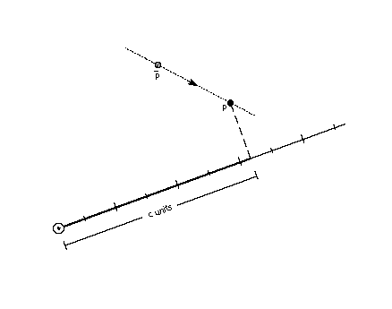
SCVTCI[] Set Control Value Table Cut-In
| Code Range | 0x1D |
| Pops | n: value for cut-in (F26Dot6) |
| Pushes | - |
| Sets | control value cut-in |
| Affects | MIAP, MIRP |
Establish a new value for the control value table cut-in.
Pops a value, n, from the stack and sets the control value cut-in to n. Increasing the value of the cut-in will increase the range of sizes for which CVT values will be used instead of the original outline value.
SDB[] Set Delta Base in the graphics state
| Code Range | 0x5E |
| Pops | n: value for the delta base (uint32) |
| Pushes | - |
| Sets | delta base |
| Affects | DELTAP1[], DELTAP2[], DELTAP3[], DELTAC1[], DELTAC2[], DELTAC3[] |
| Related instructions | SDS[ ] |
Establishes a new value for the delta base state variable thereby changing the range of values over which a DELTA[] instruction will have an affect.
Pops a number, n, and sets delta base to the value n. The default for delta base is 9.
SDPVTL[a] Set Dual Projection Vector To Line
| Code Range | 0x86 - 0x87 |
| a | 0: Vector is parallel to line |
| 1: Vector is perpendicular to line | |
| Pops | p2: point number (uint32) |
| p1: point number (uint32) | |
| Pushes | - |
| Sets | dual projection vector, projection vector, zp2 with p2, zp1 with p1 |
| Related instructions | SPVTL[ ] |
Sets a second projection vector based upon the original position of two points. The new vector will point in a direction that is parallel to the line defined from p2 to p1. The projection vector is also set in in a direction that is parallel to the line from p2 to p1 but it is set using the current position of those points.
Pops two point numbers from the stack and uses them to specify a line that defines a second, dual projection vector. This dual projection vector uses coordinates from the original outline before any instructions are executed. It is used only with the IP[], GC[], MD[], MDRP[] and MIRP[] instructions. The dual projection vector is used in place of the projection vector in these instructions. This continues until some instruction sets the projection vector again.
SDS[] Set Delta Shift in the graphics state
| Code Range | 0x5F |
| Pops | n: value for the delta shift (uint32) |
| Pushes | - |
| Sets | delta shift |
| Affects | DELTAP1[], DELTAP2[], DELTAP3[], DELTAC1[], DELTAC2[], DELTAC3[] |
| Related instructions | SDB[ ] |
Establish a new value for the delta shift state variable thereby changing the step size of the DELTA[] instructions.
Pops a value n from the stack and sets delta shift to n. The default for delta shift is 3.
SFVFS[] Set Freedom Vector From Stack
| Code | 0x0B |
| Pops | y: y component of freedom vector (F2Dot14) |
| x: x component of freedom vector (F2Dot14) | |
| Pushes | - |
| Sets | freedom vector |
| Related instructions | SFVTL[ ], SFVTPV[ ], SFVTCA[ ] |
Changes the direction of the freedom vector using values take from the stack and thereby changing the direction in which points can move.
Sets the direction of the freedom vector using the values x and y taken from the stack. The vector is set so that its projections onto the x and y -axes are x and y, which are specified as signed (two's complement) fixed-point (2.14) numbers. The value (x2 + y2) must be equal to 1 (0x4000).
SFVTCA[a] Set Freedom Vector to Coordinate Axis
| Code range | 0x04 - 0x05 |
| a | 0: set the freedom vector to the y-axis |
| 1: set the freedom vector to the x-axis | |
| Pops | - |
| Pushes | - |
| Sets | freedom vector |
| Related instructions | SFVFS[ ], SFVTL[ ], SFVTPV[ ] |
Sets the freedom vector to one of the coordinate axes depending upon the value of the flag a.
SFVTL[a] Set Freedom Vector To Line
| Code Range | 0x08 - 0x09 |
| a | 0: set freedom vector to be parallel to the line segment defined by points p1 and p2 |
| 1: set freedom vector perpendicular to the line segment defined by points p1 and p2; the vector is rotated counter clockwise 90 degrees | |
| Pops | p2: point number (uint32) |
| p1: point number (uint32) | |
| Pushes | - |
| Sets | freedom vector |
| Uses | zp1 points to the zone containing point p1 zp2 points to the zone containing point p2 |
| Related instructions | SFVTPV[ ], SFVFS[ ], SFVTCA[ ] |
Change the value of the freedom vector using the direction specified by the line whose end points are taken from the stack. The effect is to change the direction in which points can move to be parallel to that line. The order in which the points are chosen is significant. Reversing the order will reverse the direction of the freedom vector.
Pops two point numbers p2 and p1 from the stack and sets the freedom vector to a unit vector parallel or perpendicular to the line segment defined by points p1 and p2 and pointing from p2 to p1.
If the Boolean a has the value 0, the freedom vector is parallel to the line from p2 to p1.
If the Boolean a has the value one, the freedom vector is perpendicular to the line from p2 to p1. More precisely, the freedom vector is obtained by rotating the vector that is parallel to the line 90 counter clockwise.
SFVTPV[] Set Freedom Vector To Projection Vector
| Code | 0x0E |
| Pops | - |
| Pushes | - |
| Sets | freedom vector |
| Related instructions | SFVFS[ ], SFVTL[ ], SFVTCA[ ] |
Sets the freedom vector to be the same as the projection vector. This means that movement and measurement will be in the same direction.
SHC[a] SHift Contour using reference point
| Code Range | 0x34 - 0x35 |
| a | 0: uses rp2 in the zone pointed to by zp1 |
| 1: uses rp1 in the zone pointed to by zp0 | |
| Pops | c: contour to be shifted (uint32) |
| Pushes | - |
| Uses | zp0 with rp1 or zp1 with rp2 depending on flag zp2 with contour c freedom vector, projection vector |
| Related instructions | SHP[ ], SHZ[ ] |
Shifts a contour by the amount that the reference point was shifted.
Pops a number, c, and shifts every point on contour c by the same amount that the reference point has been shifted. Each point is shifted along the freedom vector so that the distance between the new position of the point and the old position of that point is the same as the distance between the current position of the reference point and the original position of the reference point. The distance is measured along the projection vector. If the reference point is one of the points defining the contour, the reference point is not moved by this instruction.
This instruction is similar to SHP[], but every point on the contour is shifted.
In the illustration below, the triangular contour formed by points ,, and is shifted by the amount, d, that reference point rp was moved from its original position. The new contour p1, p2, p3 retains the original shape but has been translated in space, along the freedom vector by the amount, d.
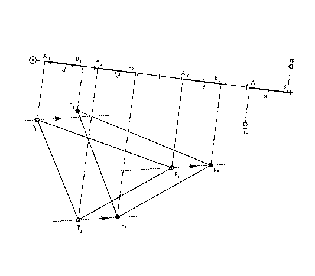
SHP[a] SHift Point using reference point
| Code Range | 0x32 - 0x33 |
| a | 0: uses rp2 in the zone pointed to by zp1 |
| 1: uses rp1 in the zone pointed to by zp0 | |
| Pops | p1, p2, , ploopvalue: point to be shifted (uint32) |
| Pushes | - |
| Uses | zp0 with rp1 or zp1 with rp2 depending on flag zp2 with point p loop, freedom vector, projection vector |
Shifts points specified by the amount the reference point has already been shifted.
Pops point numbers, p1, p2, , ploopvalue, and shifts those points by the same amount that the reference point has been shifted. Each point pi is moved along the freedom vector so that the distance between the new position of point pi and the current position of point pi is the same as the distance between the current position of the reference point and the original position of the reference point.
In the illustration below, the distance between the current position of the reference point and its original position is d. Line LL' is drawn perpendicular to the projection vector at a distance d from point A'. Point p is moved along the freedom vector to the point where the vector intersects with line LL'. The distance from point A' to B', d, is now the same as the distance from A to B.
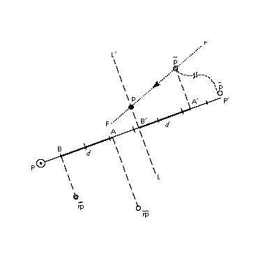
SHPIX[] SHift point by a PIXel amount
| Code Range | 0x38 |
| Pops | d: magnitude of the shift (F26Dot6) |
| p1, p2, , ploopvalue: point to be shifted (uint32) | |
| Pushes | - |
| Uses | zp2, loop, freedom vector |
| Related instructions | SHP[ ] |
Shift the specified points by the specified amount.
Pops point numbers p1, p2, , ploopvalue and an amount. Shifts each point pi by amount d.
SHPIX[ ] is unique in relying solely on the direction of the freedom vector It makes no use of the projection vector. Measurement is made in the direction of the freedom vector.
In the example below, point p is moved d pixels along the freedom vector.
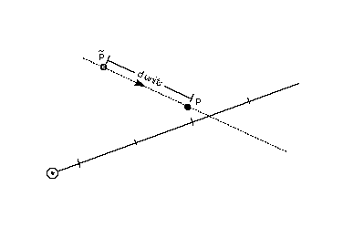
SHZ[a] SHift Zone using reference point
| Code Range | 0x36 - 0x37 |
| a | 0: the reference point rp2 is in the zone pointed to by zp1 |
| 1: the reference point rp1 is in the zone pointed to by zp0 | |
| Pops | e: zone to be shifted (uint32) |
| Pushes | - |
| Uses | zp0 with rp1 or zp1 with rp2 depending on flag freedom vector, projection vector |
| Related instructions | SHP[ ], SHC[ ] |
Shifts all of the points in the specified zone by the amount that the reference point has been shifted.
Pops a zone number, e, and shifts the points in the specified zone (Z1 or Z0) by the same amount that the reference point has been shifted. The points in the zone are shifted so that the distance between the new position of the shifted points and their old position is the same as the distance between the current position of the reference point and the original position of the reference point.
SHZ[a] uses zp0 with rp1 or zp1 with rp2. This instruction is similar to SHC[ ], but all points in the zone are shifted, not just the points on a single contour.
SLOOP[] Set LOOP variable
| Code Range | 0x17 |
| Pops | n: value for loop graphics state variable (integer) |
| Pushes | - |
| Sets | loop |
| Affects | ALIGNRP[], FLIPPT[], IP[], SHP[], SHPIX[] |
| Related instructions | LOOPCALL[ ] |
Changes the value of the loop variable thereby changing the number of times the affected instructions will execute if called.
Pops a value, n, from the stack and sets the loop variable count to that value. The loop variable works with the SHP[a], SHPIX[a], IP[ ], and ALIGNRP[]. The value n indicates the number of times the instruction is to be repeated. After the instruction executes the required number of times, the loop variable is reset to its default value of 1. Setting the loop variable to zero is an error.
SMD[] Set Minimum Distance
| Code Range | 0x1A |
| Pops | distance: value for minimum_distance (F26Dot6) |
| Pushes | - |
| Sets | minimum distance |
Establishes a new value for the minimum distance, the smallest possible value to which distances will be rounded. An appropriate setting for this variable can prevent distances from rounding to zero and therefore disappearing when grid-fitting takes place.
Pops a 26.6 value from the stack and sets the minimum distance variable to that value.
SPVFS[] Set Projection Vector From Stack
| Code Range | 0x0A |
| Pops | y: y component of projection vector (F2Dot14) x: x component of projection vector (F2Dot14) |
| Pushes | - |
| Sets | projection vector |
| Related instructions | SPVTL[ ], SPVTCA[ ] |
Establishes a new value for the projection vector using values taken from the stack.
Pops two numbers y and x representing the y an x components of the projection vector. The values x and y are 2.14 numbers extended to 32 bits. Sets the direction of the projection vector, using values x and y taken from the stack, so that its projections onto the x and y-axes are x and y, which are specified as signed (two's complement) fixed-point (2.14) numbers. The value (x2 + y2) must be equal to 1 (0x4000).
SPVTCA[a] Set Projection Vector To Coordinate Axis
| Code range | 0x02 - 0x03 |
| a | 0: set the projection vector to the y-axis |
| 1: set the projection vector to the x-axis | |
| Pops | - |
| Pushes | - |
| Sets | projection vector |
| Related instructions | SPVTL[ ], SPVFS[ ] |
Sets the projection vector to one of the coordinate axes depending on the value of the flag a.
SPVTL[a] Set Projection Vector To Line
| Code Range | 0x06 - 0x07 |
| a | 0: sets projection vector to be parallel to line segment from p2 to p1 |
| 1: sets projection vector to be perpendicular to line segment from p2 to p1; the vector is rotated counter clockwise 90 degrees | |
| Pops | p2: point number (uint32) |
| p1: point number (uint32) | |
| Pushes | - |
| Uses | point p1 in the zone pointed at by zp1 point p2 in the zone pointed at by zp2 |
| Sets | projection vector |
| Related instructions | SPVFS[ ], SPVTCA[ ] |
Changes the direction of the projection vector to that specified by the line defined by the endpoints taken from the stack. The order in which the points are specified is significant Reversing the order of the points will reverse the direction of the projection vector.
Pops two point numbers, p2 and p1 and sets the projection vector to a unit vector parallel or perpendicular to the line segment from point p2 to point p1 and pointing from p2 to p1.
SROUND[] Super ROUND
| Code Range | 0x76 |
| Pops | n: number decomposed to obtain period, phase, threshold (Eint8) |
| Pushes | - |
| Sets | round state |
| Affects | MDAP[], MDRP[], MIAP[], MIRP[], ROUND[] |
| Related instructions | S45ROUND[ ] |
Provides for fine control over the effects of the round state variable by directly setting the values of the three components of the round state: period, phase, and threshold.
Pops a number, n, from the stack and decomposes that number to obtain a period, a phase and a threshold used to set the value of the graphics state variable round state. Only the lower 8 bits of the argument n are used to obtain these values. The byte is encoded as shown in Table 8 below.
Table 8: SROUND byte encoding
| period | phase | threshold | |||||
|---|---|---|---|---|---|---|---|
| 7 | 6 | 5 | 4 | 3 | 2 | 1 | |
The period specifies the length of the separation or space between rounded values. The phase specifies the offset of the rounded values from multiples of the period. The threshold specifies the part of the domain, prior to a potential rounded value, that is mapped onto that value.Additional information on rounding can be found in "Rounding" on page 2-66.
For SROUND[] the grid period used to compute the period shown in Table 9 is equal to 1.0 pixels. Table 10 lists the possible values for the phase and Table 11 the possible values for the threshold.,
Table 9: Setting the period
| bit value | setting |
|---|---|
| 00 | 1/2 pixel |
| 01 | 1 pixel |
| 10 | 2 pixel |
| 11 | Reserved |
Table 10: Setting the phase
| bit value | setting |
|---|---|
| 00 | 0 |
| 01 | period/4 |
| 10 | period/2 |
| 11 | period*3/4 |
Table 11: Setting the threshold
| bit value | setting |
|---|---|
| 0000 | period -1 |
| 0001 | -3/8 * period |
| 0010 | -2/8 * period |
| 0011 | -1/8 * period |
| 0100 | 0/8 * period = 0 |
| 0101 | 1/8 * period |
| 0110 | 2/8 * period |
| 0111 | 3/8 * period |
| 1000 | 4/8 * period |
| 1001 | 5/8 * period |
| 1010 | 6/8 * period |
| 1011 | 7/8 * period |
| 1100 | 8/8 * period = period |
| 1101 | 9/8 * period |
| 1110 | 10/8 * period |
| 1111 | 11/8 * period |
SRP0[] Set Reference Point 0
| Code Range | 0x10 |
| Pops | p: point number (uint32) |
| Pushes | - |
| Sets | rp0 |
| Affects | ALIGNRP[], MDAP[], MDRP[], MIAP[], MIRP[] MSIRP[] |
| Related instructions | SRP1[ ], SRP2[ ] |
Sets a new value for reference point 0.
Pops a point number, p, from the stack and sets rp0 to p.
SRP1[] Set Reference Point 1
| Code Range | 0x11 |
| Pops | p: point number (uint32) |
| Pushes | - |
| Sets | rp1 |
| Affects | IP[], MDAP[], MIAP[], MSIRP[], SHC[], SHP[], SHZ |
| Related instructions | SRP0[], SRP2[ ] |
Sets a new value for reference point 1.
Pops a point number, p, from the stack and sets rp1 to p.
SRP2[] Set Reference Point 2
| Code Range | 0x12 |
| Pops | p: point number (uint32) |
| Pushes | - |
| Sets | rp2 |
| Affects | IP[], SHC[], SHP[], SHZ[] |
| Related instructions | SRP1[ ], SRP0[] |
Sets a new value for reference point 2.
Pops a point number, p, from the stack and sets rp2 to p.
SSW[] Set Single Width
| Code Range | 0x1F |
| Pops | n: value for single width value (FUnit) |
| Pushes | - |
| Sets | single width value |
| Related instructions | SSWCI[ ] |
Establishes a new value for the single width value state variable. The single width value is used instead of a control value table entry when the difference between the single width value and the given CVT entry is less than the single width cut-in.
Pops a 32 bit integer value, n, from the stack and sets the single width value in the graphics state to n. The value n is expressed in FUnits.
SSWCI[] Set Single Width Cut-In
| Code Range | 0x1E |
| Pops | n: value for single width cut-in (F26Dot6) |
| Pushes | - |
| Sets | single width cut-in |
| Affects | MIAP[], MIRP[] |
| Related instructions | SSW[ ] |
Establishes a new value for the single width cut-in, the distance difference at which the interpreter will ignore the values in the control value table in favor of the single width value.
Pops a 32 bit integer value, n, and sets the single width cut-in to n.
SUB[] SUBtract
| Code Range | 0x61 |
| Pops | n2: subtrahend (F26Dot6) |
| n1: minuend (F26Dot6) | |
| Pushes | (n1 - n2): difference (F26Dot6) |
| Related instructions | ADD[ ] |
Subtracts the number at the top of the stack from the number below it.
Pops two 26.6 numbers, n1 and n2, from the stack and pushes the difference between the two elements onto the stack.
SVTCA[a] Set freedom and projection Vectors To Coordinate Axis
| Code range | 0x00 - 0x01 |
| a | 0: set vectors to the y-axis 1: set vectors to the x-axis |
| Pops | - |
| Pushes | - |
| Sets | projection vector freedom vector |
| Related instructions | SPTCA[ ], SFVTCA[ ] |
Sets both the projection vector and freedom vector to the same coordinate axis causing movement and measurement to be in the same direction. The setting of the Boolean variable a determines the choice of axis.
SVTCA[ ] is a shortcut that replaces the SFVTCA[ ] and SPVTCA[ ] instructions. As a result, SVTCA[1] is equivalent to SFVTCA[1] followed by SPVTCA[1].
SWAP[] SWAP the top two elements on the stack
| Code Range | 0x23 |
| Pops | e2: stack element (StkElt) e1: stack element (StkElt) |
| Pushes | e2: stack element (StkElt) e1: stack element (StkElt) |
Swaps the top two stack elements.
Pops two elements, e2 and e1, from the stack and reverses their order making the old top element the second from the top and the old second element the top element.
SZP0[] Set Zone Pointer 0
| Code Range | 0x13 |
| Pops | n: zone number (uint32) |
| Pushes | - |
| Sets | zp0 |
| Affects | AA[], ALIGNPTS[], ALIGNRP[], DELTAC1[], DELTAC2[], DELTAC3[], DELTAP1[], DELTAP2[], DELTAP3[], FLIPPT[], FLIPRGOFF[], FLIPRGON[], IP[], ISECT[], MD[], MDAP[], MDRP[], MIAP[], MIRP[], MSIRP[], SHC[], SHE[], SHP[], SHZ[], UTP[] |
| Related instructions | SZP1[ ], SZP2[ ], SZPS[ ] |
Establishes a new value for zp0. It can point to either the glyph zone or the twilight zone.
Pops a zone number, n, from the stack and sets zp0 to the zone with that number. If n has the value zero, zp0 points to zone 0 (the twilight zone). If n has the value one, zp0 points to zone 1 (the glyph zone). Any other value for n is an error.
SZP1[] Set Zone Pointer 1
| Code Range | 0x14 |
| Pops | n: zone number (uint32) |
| Pushes | - |
| Sets | zp1 |
| Affects | ALIGNPTS[], ALIGNRP[], IP[], ISECT[], MD[], MDRP[], MIRP[], MSIRP[], SDPVTL[], SFVTL[], SHC[], SHP[], SHZ[], SPVTL[] |
| Related instructions | SZP0[ ], SZP2[ ], SZPS[ ] |
Establishes a new value for zp1. It can point to either the glyph zone or the twilight zone.
Pops a zone number, n, from the stack and sets zp1 to the zone with that number. If n has the value zero, zp1 points to zone 0 (the twilight zone). If n has the value one, zp1 points to zone 1 (the glyph zone). Any other value for n is an error.
SZP2[] Set Zone Pointer 2
| Code Range | 0x15 |
| Pops | n: zone number (uint32) |
| Pushes | - |
| Sets | zp2 |
| Affects | IP[], ISECT[], IUP[], GC[], SDPVTL[], SHC[], SHP[], SFVTL[], SHPIX[], SPVTL[], SC[] |
| Related instructions | SZP0[ ], SZP1[ ], SZPS[ ] |
Establishes a new value for zp2. It can point to either the glyph zone or the twilight zone.
Pops a zone number, n, from the stack and sets zp2 to the zone with that number. If n has the value zero, zp2 points to zone 0 (the twilight zone). If n has the value one, zp2 points to zone 1 (the glyph zone). Any other value for n is an error.
SZPS[] Set Zone PointerS
| Code Range | 0x16 |
| Pops | n: zone number (uint32) |
| Pushes | - |
| Sets | zp0, zp1, zp2 |
| Affects | ALIGNPTS[], ALIGNRP[], DELTAC1[], DELTAC2[], DELTAC3[], DELTAP1[], DELTAP2[], DELTAP3[], FLIPPT[], FLIPRGOFF[], FLIPRGON[], GC[], IP[], ISECT[], IUP[], MD[], MDAP[], MDRP[], MIAP[], MIRP[], MSIRP[], SC[], SDPVTL[], SFVTL[], SHPIX[], SPVTL[], SHC[], SHP[], SHZ[], SPVTL[], UTP[] |
| Related instructions | SZP0[ ], SZP1[ ], SZP2[ ] |
Sets all three zone pointers to refer to either the glyph zone or the twilight zone.
Pops an integer n from the stack and sets all of the zone pointers to point to the zone with that number. If n is 0, all three zone pointers will point to zone 0 (the twilight zone). If n is 1, all three zone pointers will point to zone 1 (the glyph zone). Any other value for n is an error.
UTP[] UnTouch Point
| Code Range | 0x29 |
| Pops | p: point number (uint32) |
| Pushes | - |
| Uses | zp0 with point p, freedom vector |
| Affects | IUP[ ] |
Marks a point as untouched thereby causing the IUP[ ] instruction to affect its location.
Pops a point number, p, and marks point p as untouched. A point may be touched in the x-direction, the y-direction, or in both the x and y-directions. The position of the freedom vector determines whether the point is untouched in the x-direction, the y-direction, or both. If the vector is set to the x-axis, the point will be untouched in the x-direction. If the vector is set to the y-axis, the point will be untouched in the y-direction. Otherwise the point will be untouched in both directions.
A points that is marked as untouched will be moved by an IUP[ ] instruction even if the point was previously touched.
WCVTF[] Write Control Value Table in Funits
| Code Range | 0x70 |
| Pops | n: number in FUnits (uint32) l: control value table location (uint32) |
| Pushes | - |
| Sets | control value table entry |
| Related instructions | WCVTP[ ] |
Writes a scaled F26Dot6 value to the specified control value table location.
Pops an integer value, n, and a control value table location l from the stack. The FUnit value is scaled to the current point size and resolution and put in the control value table. This instruction assumes the value is expressed in FUnits and not pixels.
Since the CVT has been scaled to pixel values, the value taken from the stack is scaled to the appropriate pixel value before being written to the table.
WCVTP[] Write Control Value Table in Pixel units
| Code Range | 0x44 |
| Pops | v: value in pixels (F26Dot6) l: control value table location (uint32) |
| Pushes | - |
| Sets | control value table entry |
| Related instructions | WCVTF[ ] |
Writes the value in pixels into the control value table location specified.
Pops a value v and a control value table location l from the stack and puts that value in the specified location in the control value table. This instruction assumes the value taken from the stack is in pixels and not in FUnits. The value is written to the CVT table unchanged. The location l must be less than the number of storage locations specified in the 'maxp' table in the font file.
WS[] Write Store
| Code Range | 0x42 |
| Pops | v: storage area value (uint32) l: storage area location (uint32) |
| Pushes | - |
| Sets | storage area value |
| Related instructions | RS[ ] |
Write the value taken from the stack to the specified storage area location.
Pops a storage area location l, followed by a value, v. Writes this 32-bit value into the storage area location indexed by l. The value must be less than the number of storage locations specified in the 'maxp' table of the font file.